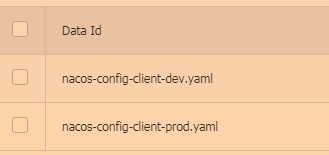

SpringCloud–学习笔记(包含SpringCloud视频)
Lesson1 微服务架构概述
NO1.1 微服务架构简介
SOA是什么？SOA(面向服务的架构)不是具体的什么技术，而是一种开发项目的思想，这种思想开发的项目有很多好处，更符合现在的互联网系统快速发展的时代。
微服务架构，咱们举个通俗易懂的例子：
问题设计：比如现在我有一个数据库，一个JavaWeb(或者PHP等)的网站客户端，一个安卓App客户端，一个IOS客户端；现在我要给用户提供一个注册账号的功能；
不用SOA的设计思想的实现：JavaWeb里面写一个注册账号的功能，安卓App里面写一个注册账号的功能，IOS同样如此；那么这样的实现有没有什么问题呢？比如有一天，我的注册方法需要改动，那是不是三个地方都要改，而且要改的一模一样；当然问题不止这一个….；SOA的设计思想实现：用Java(或者是其他语言皆可)单独创建一个工程部署在一台服务器上，并且写一个方法(或称函数)执行上述注册操作，然后提供一个接口，其他人可以通过某种途径(可以是http链接，或者是基于socket的RPC调用)访问这个方法来使用这个注册功能；就是说把这个操作封装到一个工程中去，然后暴露访问的方式，形成“服务”；如果要修改关于注册这个功能的业务逻辑什么的，只要改这个服务就好了，很好的解耦；这样有什么优缺点呢？- 优点：
- 扩展方便：一旦哪天突然有一堆人要注册，假设这堆人仅仅只是注册而不做其他事情，注册这个功能压力很大，而原有的一台部署了注册服务的服务器已经承受不了这么高的并发，这时候就可以单独集群部署这个注册服务，多提供几台服务器来提供注册的服务；
- 语言通用：实现这个服务的可以是任何语言，只要提供的接口通用就可以了，比如PHP擅长处理逻辑、Ruby语言擅长高并发、Java擅长大数据等，那我可以这样子做：在某些业务逻辑很复杂的服务中使用PHP，在某些并发很高的服务中使用Ruby….；
- 新人友好：新人进公司的时候他无需了解整个项目的架构是怎样的，比如你进阿里了，你想要熟练整个淘宝的架构你会累死，而这种SOA思想开发的项目由于是服务形式的，比方把你分到购物车组，那你只需要了解购物车的功能就好了；
- 发版方便：比方说你是淘宝购物车项目组的，你的项目改了一些东西要发版(发布生产)，如果你是传统项目测试，可能怕你改动到了其他的东西影响到了其他的功能(虽然你很确信没改动到，但万一呢？)，不得不对淘宝整体的功能都做一遍测试，累死人，而这种形式的测试只需要测试你的购物车的功能，so easy；退一步说，万一你改的代码有问题测试没测出来，那也是影响购物车的功能，用户下单支付不影响；
- 缺点：
- 问题排查不便：比方用户买东西的时候出现了一个报错，很难直接定位到问题出在哪个环节，可能是订单组的代码有问题，也可能是支付组的代码有问题；
- 沟通不便：如果你们在大公司待过的话就会明白，用户组、订单组、购物车组、支付组等等是分别属于不同的领导管理，出了问题沟通起来很麻烦，甚至你都不知道找谁沟通，也可能以前跟你沟通的人后来离职了等等的问题；
- 性能问题：相对于传统项目的直接调用，SOA中不管你是使用RPC还是什么HTTP等技术调用，肯定会有性能的损耗，因为网络通信是需要时间的；
- 关系混乱：当服务越来越多，调用方也越来越多的时候，它们之间的关系就变得非常混乱；
- 优点：
- 总结：整体而言SOA肯定是利大于弊的，虽然缺点很明显，但是基本都是可以克服的，问题排查不便那就对花点时间呗，沟通不便就找上级领导多沟通呗，性能问题用内网什么的也能降低到很少，关系乱就可以用服务治理；相对而言，好处部分基本上是传统“Only One”项目不可能克服的，比如非SOA项目扩展基本很难，全部的代码丢到一个项目里面，类似淘宝这种，新人可能看三年五年也看不懂；
问题设计：还是上面的例子，假如我有一个用户服务，一开始有调用方1和调用方2来使用这个服务，后来越来越多，将近上百个调用方，这个时候作为服务方，它只知道提供服务，却不知道具体为谁提供了服务；而对于开发者来说，知道这N多调用方和N多服务方之间的关系是非常重要的，所以这个时候就需要能进行服务治理的框架，比如dubbo+zookeeper，比如SpringCloud，有了服务治理功能，我们就能清晰地看到服务被谁谁谁调用，谁谁谁调用了哪些服务，哪些服务是热点服务需要配置服务器集群，而对这个服务集群的负载均衡也是服务治理可以完成的重要功能之一；
总结：实际上SOA只是一种架构设计模式，而SOAP、REST、RPC就是根据这种设计模式构建出来的规范，其中SOAP通俗理解就是http+xml的形式，REST就是http+json的形式，RPC是基于socket的形式；CXF就是典型的SOAP/REST框架，dubbo就是典型的RPC框架，而SpringCloud就是遵守REST规范的生态系统。
最后的总结：什么是微服务？简单来说，微服务是一种架构模式，叫微服务架构更合理，就是把一个系统中的各个功能点都拆开为一个个的小应用然后单独部署，同时因为这些小应用多，所以需要一些办法来管理这些小应用。
NO1.2 SpringCluod简介
Spring Cloud是什么？简单来说，Spring Cloud是一个微服务框架的规范，这里要注意，只是规范，它不是任何具体的框架。
- 我们知道Java大佬最喜欢的做法就是自己制定规范，然后别人基于我这个规范来做实现。那么这个规范里面有什么呢，它规定大概要有这几种功能：服务的注册与发现、负载均衡、服务熔断和限流、智能路由、控制总线、链路监控….等等。刚好，这个时候有一个框架集合，几乎能满足上面所有的需求，它就是Spring Cloud Netflix。当然，Spring Cloud的实现产品不止这一个，还有最近由阿里新起的Spring Cloud Alibaba等，目前国内主流的是Spring Cloud Netflix。那么Spring Cloud Netflix有哪些组件(技术栈)呢，如下：
- Eureka：提供服务注册与发现功能；
- Ribbon：提供负载均衡功能；
- Feign：整合了ribbon和Hystrix，具有负载均衡和熔断限流等功能；
- Hystrix：提供了熔断限流，合并请求等功能；
- Zuul：提供了智能路由的功能；
- Hystrix Dashboard：提供了服务监控的功能，提供了数据监控和友好的图形化界面；
- Hystrix Turbine：Hystrix Turbine将每个服务Hystrix Dashboard数据进行了整合，也是监控系统的功能；
- Spring Cloud Config：提供了统一配置的功能；
- Spring Cloud Bus：提供了配置实时更新的功能；
- ….等等。
注意：需要注意的是这些组件并不是一体化的，比如你完全可以用携程的Apollo来替换Spring Cloud config、也可以用NCOS或者Zookeeper来替换Eureka。
SpringCloud与SpringBoot的关系：
SpringCloud是一个基于SpringBoot实现的云应用开发工具。Spring boot专注于快速、方便的集成单个微服务，Spring Cloud是关注全局的服务治理框架。spring boot使用了默认大于配置的理念，很多集成方案已经帮你选择好了，能不配置就不配置，Spring Cloud很大的一部分是基于Spring boot来实现。Spring Cloud与Spring Boot的版本关系如下所示。
Lesson2 微服务基础
NO2.1 搭建基本微服务模块
首先我们要知道一个微服务模块是如何搭建的。
<dependencyManagement>和<dependencies>的区别：<dependencies>标签里放的是你要引入的依赖，所有声明在该标签里的依赖都会自动引入，并默认被所有的子项目继承；<dependencyManagement>标签只出现在父项目中；该标签管理一些依赖的版本号，子项目继承父项目后，就不用再写依赖的版本号了；该标签并不引入依赖，只是便于让子项目继承，然后子项目自己引入依赖。//父工程中的mysql依赖 <dependencyManagement> <dependencies> <dependency> <groupId>mysql</groupId> <artifactId>mysql-connector-java</artifactId> <version>5.1.2</version> </dependency> </dependencies> </dependencyManagement> ------------------------------------------------------------- //继承了父项目的子项目，引入了父项目定义过的依赖，那么就可以不用写version信息，因为父项目里已经定义好了；如果子项目想要使用别的版本号，也可以自己添加version信息进行指定即可 <dependencies> <dependency> <groupId>mysql</groupId> <artifactId>mysql-connector-java</artifactId> </dependency> </dependencies>
创建MyCloud父项目和cloud-provider-eureka-payment8001子项目。
使用IDEA快速创建一个父项目，自定义项目名和包名即可；

在父项目上，右键创建我们即将要做的provider-payment子项目。
子项目创建完成后，在pom.xml中引入需要的使用的依赖；
注意：actuator依赖用于监控Spring Boot应用本身的一些系统状态；<?xml version="1.0" encoding="UTF-8"?> <project xmlns="http://maven.apache.org/POM/4.0.0" xmlns:xsi="http://www.w3.org/2001/XMLSchema-instance" xsi:schemaLocation="http://maven.apache.org/POM/4.0.0 http://maven.apache.org/xsd/maven-4.0.0.xsd"> <parent> <artifactId>MyCloud</artifactId> <groupId>cn.dyf</groupId> <version>1.0-SNAPSHOT</version> </parent> <modelVersion>4.0.0</modelVersion> <artifactId>cloud-provider-payment8001</artifactId> <dependencies> <!--Web依赖--> <dependency> <groupId>org.springframework.boot</groupId> <artifactId>spring-boot-starter-web</artifactId> </dependency> <!--监控依赖--> <dependency> <groupId>org.springframework.boot</groupId> <artifactId>spring-boot-starter-actuator</artifactId> </dependency> <!--MyBatis依赖--> <dependency> <groupId>org.mybatis.spring.boot</groupId> <artifactId>mybatis-spring-boot-starter</artifactId> </dependency> <!--Druid连接池依赖--> <dependency> <groupId>com.alibaba</groupId> <artifactId>druid-spring-boot-starter</artifactId> </dependency> <!--mysql-connector-java依赖--> <dependency> <groupId>mysql</groupId> <artifactId>mysql-connector-java</artifactId> </dependency> <!--JDBC依赖--> <dependency> <groupId>org.springframework.boot</groupId> <artifactId>spring-boot-starter-jdbc</artifactId> </dependency> <!--热部署依赖--> <dependency> <groupId>org.springframework.boot</groupId> <artifactId>spring-boot-devtools</artifactId> <scope>runtime</scope> <optional>true</optional> </dependency> <!--lombok依赖--> <dependency> <groupId>org.projectlombok</groupId> <artifactId>lombok</artifactId> <optional>true</optional> </dependency> <!--Test依赖--> <dependency> <groupId>org.springframework.boot</groupId> <artifactId>spring-boot-starter-test</artifactId> <scope>test</scope> </dependency> </dependencies> </project>配置application.yml文件；
server: port: 8001 spring: application: name: cloud-payment-service datasource: #数据源类型 type: com.alibaba.druid.pool.DruidDataSource #mysql驱动类 driver-class-name: com.mysql.jdbc.Driver url: jdbc:mysql://localhost:3306/db2019?useUnicode=true&characterEncoding=UTF-8&useSSL=false&serverTimezone=GMT%2B8 username: root password: Deng521314 mybatis: mapper-locations: classpath:mapper/*.xml type-aliases-package: cn.dyf.entities配置主启动类；
@SpringBootApplication public class EurekaPayment8001 { //main方法 public static void main(String[] args){ SpringApplication.run(PaymentMain.class,args); } }创建数据库和表；
CREATE TABLE `payment`( `id` BIGINT(20) NOT NULL AUTO_INCREMENT COMMENT 'id', `serial` VARCHAR(200) DEFAULT '', PRIMARY KEY(`id`) )ENGINE=INNODB AUTO_INCREMENT = 1 DEFAULT CHARSET=utf8创建entities实体类和CommonResult信息类；
/** * @description: 支付实体类 * @auther: 带头大哥杰尼龟 * @date: 2020-05-12 21:11 */ @Data @NoArgsConstructor //无参构造 @AllArgsConstructor //全参构造 public class Payment implements Serializable { private Long id; private String serial; } //--------------------------------------------------- /** * @description: 返回给前端的信息类 * @auther: 带头大哥杰尼龟 * @date: 2020-05-12 21:15 */ @Data @NoArgsConstructor public class CommonResult<T> { private Integer code; private String message; private T data; public CommonResult(Integer code, String message, T data) { this.code = code; this.message = message; this.data = data; } //当获取数据失败时，需要调用的构造方法 public CommonResult(Integer code, String message){ this(code,message,null); } }编写PaymentDao和PaymentDao.xml文件；
/** * @description: 支付模块的Dao层 * @auther: 带头大哥杰尼龟 * @date: 2020-05-12 21:32 */ @Mapper //该注解会给当前类生成相应的实现类，所以该类下不允许方法重载 public interface PaymentDao { //添加 public int create(Payment payment); //查找 public Payment getPaymentById(@Param("id") Long id); } //-------------------------------- <?xml version="1.0" encoding="UTF-8"?> <!DOCTYPE mapper PUBLIC "-//mybatis.org//DTD Mapper 3.0//EN" "http://mybatis.org/dtd/mybatis-3-mapper.dtd"> <mapper namespace="cn.dyf.springcloud.dao.PaymentDao"> <resultMap id="BaseResultMap" type="cn.dyf.springcloud.entities.Payment"> <id column="id" property="id" jdbcType="BIGINT"></id> <id column="serial" property="serial" jdbcType="VARCHAR"></id> </resultMap> <insert id="create" parameterType="Payment" useGeneratedKeys="true" keyProperty="id"> insert into payment(serial) values(#{serial}) </insert> <select id="getPaymentById" parameterType="Long" resultMap="BaseResultMap"> select id,serial from payment where id = #{id} </select> </mapper>编写PaymentService、PaymentServiceImpl、PaymentController文件；
/** * @description: 支付模块的Service接口 * @auther: 带头大哥杰尼龟 * @date: 2020-05-12 22:11 */ public interface PaymentService { //添加 public int create(Payment payment); //查找 public Payment getPaymentById(@Param("id") Long id); } //------------------------------------- /** * @description: 支付模块的Service实现类 * @auther: 带头大哥杰尼龟 * @date: 2020-05-12 22:13 */ @Service public class PaymentServiceImpl implements PaymentService { @Resource private PaymentDao paymentDao; @Override public int create(Payment payment) { return paymentDao.create(payment); } @Override public Payment getPaymentById(Long id) { return paymentDao.getPaymentById(id); } } //-------------------------------------------- /** * @description: 支付模块的Controller层 * @auther: 带头大哥杰尼龟 * @date: 2020-05-12 22:18 */ @RestController @Slf4j public class PaymentController { @Resource private PaymentService paymentService; @PostMapping("/payment/create") public CommonResult create(Payment payment){ //添加 int result = paymentService.create(payment); //日志记录 log.info("****添加结果："+result); if(result > 0 ){ return new CommonResult(200,"添加成功",result); }else{ return new CommonResult(500,"添加失败",null); } } @GetMapping("/payment/get/{id}") public CommonResult create(@PathVariable("id") Long id){ //查询 Payment payment = paymentService.getPaymentById(id); //日志记录 log.info("****添加结果：" + payment); if(payment != null ){ return new CommonResult(200,"查询成功",payment); }else{ return new CommonResult(500,"查询失败，要查询的id为：" + id, null); } } }运行我们编写的微服务，测试两个方法即可。
因为我们常常会修改项目，所以总是启动和关闭项目很耗费资源，于是我们经常使用到热部署(该依赖一般只用在开发阶段)：
引入热部署依赖到指定项目的pom.xml文件中；
<!--热部署依赖--> <dependency> <groupId>org.springframework.boot</groupId> <artifactId>spring-boot-devtools</artifactId> <scope>runtime</scope> <optional>true</optional> </dependency>添加到插件依赖到父工程的pom.xml中；
<plugin> <groupId>org.springframework.boot</groupId> <artifactId>spring-boot-maven-plugin</artifactId> <configuration> <fork>true</fork> <addResources>true</addResources> </configuration> </plugin> <!--注意：上面的plugin标签要放在plugins标签中-->设置一下IDEA的一些设置，即下面红框中的四个选项都要勾选；
进入导入了热部署依赖的pom.xml文件中，使用快捷键
shift+control+clt+/，出现如下图2.1.1示的对话框后，点击Registry，在出现后的图2.1.2示的对话框中找到对应的两个选项勾选；说明：图2.1.1说明：图2.1.2重启IDEA，到此热部署配置完成。
创建cloud-consumer-eureka-order8100子项目(以下简称8100子项目)，步骤和创建cloud-provider-eureka-payment8001子项目(以下简称8001子项目)一样，这里不过多叙述；但是8100子项目中，因为要调用8001子项目的功能，所以这里就涉及到了微服务之间的调用；
RestTemplate：
- 定义：RestTemplate是Spring提供的用于访问Rest服务(这个其实就是访问其它的微服务)的客户端，RestTemplate提供了多种便捷访问远程Http服务的方法,能够大大提高客户端的编写效率。
简单讲，RestTemplate这个东西就是用来访问其它微服务而使用的一个客户端；
- 定义：RestTemplate是Spring提供的用于访问Rest服务(这个其实就是访问其它的微服务)的客户端，RestTemplate提供了多种便捷访问远程Http服务的方法,能够大大提高客户端的编写效率。
首先，创建一个配置类，将RestTemplate对象交给Spring管理；
/** * @description: * @auther: 带头大哥杰尼龟 * @date: 2020-07-15 14:34 */ @Configuration public class ApplicationContextConfig { @Bean public RestTemplate getRestTemplate(){ return new RestTemplate(); } }编写80子项目的Controller类调用8001子项目的微服务即可；
/** * @description: * @auther: 带头大哥杰尼龟 * @date: 2020-07-15 14:26 */ @RestController @Slf4j public class OrderController { public static final String PAYMENT_URL="http://localhost:8001"; @Resource private RestTemplate restTemplate; @GetMapping("/comsumer/create") public CommonResult<Payment> create(Payment payment){ return restTemplate.postForObject(PAYMENT_URL+"/payment/create",payment,CommonResult.class); } @GetMapping("/comsumer/get/{id}") public CommonResult<Payment> getPayment(@PathVariable("id") Long id){ return restTemplate.getForObject(PAYMENT_URL+"/payment/get/"+id,CommonResult.class); } } //---------------------------------------------------- @PostMapping("/payment/create") public CommonResult create(@RequestBody Payment payment){ //添加 int result = paymentService.create(payment); //日志记录 log.info("****添加结果："+result); if(result > 0 ){ return new CommonResult(200,"添加成功",result); }else{ return new CommonResult(500,"添加失败",null); } } 注意：在使用80子项目来调用8001子项目(这就是微服务之间的调用)时，会发现添加数据时，没有添加进去，这是因为在微服务之间的调用，对象类型的参数被转化成JSON数据然后进行http传输调用，所以在后续的微服务中要获得前面微服务传来的对象类型参数时，要使用注解@RequestBody来封装获取到的对象类型参数最后，测试微服务之间的调用即可。
注意：一般启动多个微服务，会自动出现rundashboard这个节目，便于微服务的查看，如果没有，请按照以下步骤操作。右键父工程，找到show in explorer选项，该步骤其实就是打开你项目的本地路径，找到
.idea目录，进入后，找到workspace.xml文件并打开，然后添加如下代码到该文件的指定位置；<option name="configurationTypes"> <set> <option value="SpringBootApplicationConfigurationType" /> </set> </option> 说明：将上面这段代码添加到<componment name="RunDashboard">标签中，重启IDEA即可重启IDEA接即可。
测试完成后，发现上述两个子项目可以完成微服务之间的调用了，但是两个子项目中都有entites这个实体类，所以我们要将这个重复的实体类抽取出来让大家共用，所以需要对工程进行一次重构；
首先创建一个子项目cloud-api-commons并修改pom.xml文件，该项目就是存放那些复用较高的代码。说白了就是将这些复用的代码打包成一个JAR包，在各个子项目中只要引入依赖就可以使用了；
<!--添加如下依赖--> <dependency> <groupId>org.springframework.boot</groupId> <artifactId>spring-boot-devtools</artifactId> <scope>runtime</scope> <optional>true</optional> </dependency> <dependency> <groupId>org.projectlombok</groupId> <artifactId>lombok</artifactId> <optional>true</optional> </dependency> <dependency> <groupId>cn.hutool</groupId> <artifactId>hutool-all</artifactId> <version>5.1.0</version> </dependency>使用Maven的生命周期clean，再使用install将项目打包成JAR包上传到本地仓库中；
在各个子项目中引入自定义的JAR依赖；
<!-- 引用自己定义的api通用包，可以使用Payment支付Entity --> <dependency> <groupId>cn.dyf.springcloud</groupId> <artifactId>cloud-api-commons</artifactId> <version>${project.version}</version> </dependency> 注意：如果IDEA提示说找不到本地的这个JAR包，那么可以把<version>标签去掉试一试最后，打开项目，测试运行微服务的访问；
NO2.2 Eureka–服务注册中心
- Eureka：
- 定义：即SpringCloud Netflix框架中的Eureka模块，主要用来实现服务治理；
- 作用：管理服务与服务之间的依赖关系，可以实现服务调用、负载均衡、容错、服务发现与注册等等；
- 组件：
Eureka Server：提供服务注册功能。即各个微服务节点通过配置启动后，会在Eureka Server中进行注册，这样Eureka Server中的服务注册表将会存储所有可用服务节点的信息，服务节点的信息可以在界面直观看到；Eureka Client：通过注册中心进行访问。这是一个Java客户端，用于简化和Eureka Server的交互，客户端同时也具备一个内置的、使用轮询负载算法的负载均衡器。在应用启动后，将会向Eureka Server发送心疼(默认周期为30秒)。如果Eureka Server在多个心跳周期内(默认90秒)没有接收到某个节点的心跳，Eureka Server将会从服务注册中把该服务节点移除。
单点Eureka Server的配置：
创建一个cloud-server-eureka7001项目(以下简称7001子项目)，导入依赖：
<dependencies> <!-- Eureka服务端 --> <dependency> <groupId>org.springframework.cloud</groupId> <artifactId>spring-cloud-starter-netflix-eureka-server</artifactId> </dependency> <!-- 引用自己定义的api通用包，可以使用Payment支付Entity --> <dependency> <groupId>cn.dyf.springcloud</groupId> <artifactId>cloud-api-commons</artifactId> </dependency> <!--Web依赖--> <dependency> <groupId>org.springframework.boot</groupId> <artifactId>spring-boot-starter-web</artifactId> </dependency> <!--监控--> <dependency> <groupId>org.springframework.boot</groupId> <artifactId>spring-boot-starter-actuator</artifactId> </dependency> <!-- 一般通用配置 --> <dependency> <groupId>org.springframework.boot</groupId> <artifactId>spring-boot-devtools</artifactId> <scope>runtime</scope> <optional>true</optional> </dependency> <dependency> <groupId>org.projectlombok</groupId> <artifactId>lombok</artifactId> <optional>true</optional> </dependency> <dependency> <groupId>org.springframework.boot</groupId> <artifactId>spring-boot-starter-test</artifactId> <scope>test</scope> </dependency> </dependencies>编写application.yml配置文件；
server: port: 7001 eureka: instance: hostname: localhost #eureka服务端的实例名字 client: #表示不向注册中心注册自己 register-with-eureka: false #表示自己就是注册中心，职责是维护服务实例，并不需要去检索服务 fetch-registry: false service-url: #设置与eureka server交互的地址，查询服务和注册服务都需要依赖这个地址，也就是说，当前项目是微服务的话，那么这里放的就是你要注册进的服务注册中心的地址；如果当前项目是服务注册中心，你打算进行进群配置，那么这里放的就是其他服务注册中心的地址 defaultZone: http://${eureka.instance.hostname}:${server.port}/eureka/编写Eureka Server的启动类；
/** * @description: * @auther: 带头大哥杰尼龟 * @date: 2020-07-16 14:26 */ @SpringBootApplication @EnableEurekaServer //告诉Spring这是服务注册中心，并开启该服务 public class EurekaMain7001 { //main方法 public static void main(String[] args){ SpringApplication.run(EurekaMain7001.class,args); } }启动7001子项目，并输入
http://localhost:7001就可以访问eureka服务注册中心了；
将8001子项目注册到Eureka服务注册中心：
导入Eureka客户端依赖到8001子项目；
<!-- Eureka客户端 --> <dependency> <groupId>org.springframework.cloud</groupId> <artifactId>spring-cloud-starter-netflix-eureka-client</artifactId> </dependency>修改8001子项目的配置文件，并配置Eureka客户端信息；
eureka: client: #是否把自己注册进Eukreka服务注册中心 register-with-eureka: true #表示是否从Eureka服务注册中心获取注册信息，默认为true。单节点无所谓，但是集群则必须设置为true才能配合Ribbon使用负载均衡 fetchRegistry: true service-url: defaultZone: http://localhost:7001/eureka在8001子项目的启动类上添加注解：
@SpringBootApplication @EnableEurekaClient //告诉Spring，我是Eureka客户端 public class PaymentMain { //main方法 public static void main(String[] args){ SpringApplication.run(PaymentMain.class,args); } }访问Eureka，查看8001子项目的服务是否成功注册到Eureka中；
最后，将8100子项目也注册到Eureka中，步骤参照8001子项目即可；
Eureka集群：
介绍：如果我们的服务注册中心只有一个，万一哪天出故障了，那么所有服务都将无法使用，所以为了避免这种情况发生，就出现了集群，简单讲，就是多预备几个服务注册中心就可以了；
原理：其实就是Eureka Server之间相互注册；
基本步骤：
创建cloud-server-eureka7002子项目(以下简称7002子项目)，该子项目就是用于Eureka集群配置，导入依赖，和7001子项目中的依赖相同即可；
如果你是本机上测试Eureka集群，那么需要到本机的
C:\Windows\System32\drivers\etc下找到并编辑hosts文件；#集群配置 127.0.0.1 eureka7001.com 127.0.0.1 eureka7002.com 说明：表示，当访问域名为eureka7001.com时，实际访问的是127.0.0.1，访问eureka7002.com同理。分别修改Eureka的集群配置文件；
server: port: 7001 eureka: instance: hostname: eureka7001.com #eureka服务端的实例名字 client: #表示不向注册中心注册自己 register-with-eureka: false #表示自己就是注册中心，职责是维护服务实例，并不需要去检索服务 fetch-registry: false service-url: #设置与eureka server交互的地址，查询服务和注册服务都需要依赖这个地址 #defaultZone: http://${eureka.instance.hostname}:${server.port}/eureka/ #@defaultZone: http://eureka7002.com:7002/eureka/,.... defaultZone: http://eureka7002.com:7002/eureka/ //--------------------------------------------------- server: port: 7002 eureka: instance: hostname: eureka7002.com #eureka服务端的实例名字 client: #表示不向注册中心注册自己 register-with-eureka: false #表示自己就是注册中心，职责是维护服务实例，并不需要去检索服务 fetch-registry: false service-url: #设置与eureka server交互的地址，查询服务和注册服务都需要依赖这个地址 #defaultZone: http://${eureka.instance.hostname}:${server.port}/eureka/ defaultZone: http://eureka7001.com:7001/eureka/配置7002子项目启动类；
@SpringBootApplication @EnableEurekaServer public class EurekaMain7002 { //main方法 public static void main(String[] args){ SpringApplication.run(EurekaMain7002.class,args); } }启动Eureka集群并访问Eureka进行测试；
将8100子项目、8001子项目注册到Eureka集群中。
分别修改两个子项目的yml配置文件；
service-url: #这是单个Eureka的配置 #defaultZone: http://localhost:7001/eureka #这是集群Eureka的配置 defaultZone: http://eureka7001.com:7001/eureka/,http://eureka7002.com:7002/eureka/ 说明：其实只要将两个子项目的service-url配置一下就可以了，也就是将微服务同时注册进多个Eureka就行了
将多个微服务提供者注册到服务注册中心，并在调用微服务时，默认使用轮询调度的方式去调用相同的微服务。
创建cloud-provider-eureka-payment8002子项目(以下简称8002子项目)，该项目和8001子项目一样，是微服务的提供者，所以创建过程和8001子项目一致，参考8001子项目即可；
配置调用者8100子项目，由于我们要调用的微服务，现在有两个了，即8001子项目和8002子项目，那么我们现在访问微服务时，不能写死指定去访问某一个微服务，这样就达不到轮询调度微服务的效果；
@RestController @Slf4j public class OrderController { //public static final String PAYMENT_URL="http://localhost:8001"; public static final String PAYMENT_URL="http://CLOUD-PAYMENT-SERVICE"; @Resource private RestTemplate restTemplate; @GetMapping("/comsumer/create") public CommonResult<Payment> create(Payment payment){ return restTemplate.postForObject(PAYMENT_URL+"/payment/create",payment, CommonResult.class); } @GetMapping("/comsumer/get/{id}") public CommonResult<Payment> getPayment(@PathVariable("id") Long id){ return restTemplate.getForObject(PAYMENT_URL+"/payment/get/"+id,CommonResult.class); } } 说明：因为将8001和8002两个子项目都注册到了Eureka，此时再去访问8100子项目，却发现项目报错，原因是，服务注册中心不知道你要用什么方式调用微服务，因为微服务提供者有两个，所以还需要对RestTemplate进行配置，即让该对象使用轮询调度方式去访问 @Configuration public class ApplicationContextConfig { @Bean @LoadBalanced //该注解就是让访问达到负载均衡的效果，即轮询调度相同服务名下的不同微服务实体 public RestTemplate getRestTemplate(){ return new RestTemplate(); } }配置完成后，测试调用微服务。
actuator微服务信息完善：
集群微服务中服务名称的修改，及显示微服务的ip地址：只需要分别在不同的微服务提供者项目的yml文件中进行配置即可。
#....省略了前面的一些其他配置详情 eureka: client: #是否把自己注册进Eukreka服务注册中心 register-with-eureka: true #表示是否从Eureka服务注册中心获取注册信息，默认为true。单节点无所谓，但是集群则必须设置为true才能配合Ribbon使用负载均衡 fetchRegistry: true service-url: #这是单个Eureka的配置 #defaultZone: http://localhost:7001/eureka #这是集群Eureka的配置 defaultZone: http://eureka7001.com:7001/eureka/,http://eureka7002.com:7002/eureka/ #这个就是配置服务提供者的服务名称，以及显示ip地址 instance: instance-id: payment8002 prefer-ip-address: true 注意：服务注册中心里的微服务名称就是ServiceId，而这里配置的instance-id则是该微服务项目不同的服务实例，不要搞混了。
服务发现Discover：即我想要知道Eurake上有哪些微服务可以使用，然后还可以根据指定的微服务名称，查看该微服务下更详细的微服务信息，这就是服务发现；代码如下：
首先，我们需要一个DiscoveryClient服务发现对象，其实个人理解，这个对象就相当于是Eureka的实例对象一样，能够获得Eureka中有哪些微服务，以及查看更加具体的微服务信息等待；
@Resource private DiscoveryClient discoveryClient; //这里的服务发现对象是org.springframework.cloud.client.discovery.DiscoveryClient包的，别导错包了 @GetMapping("/payment/diss") public String getMessage(){ List<String> services = discoveryClient.getServices(); for (String s:services) { //输出 System.out.println("拥有服务："+s); } List<ServiceInstance> instances = discoveryClient.getInstances("CLOUD-PAYMENT-SERVICE"); for(ServiceInstance si:instances){ //输出 System.out.println(si.getServiceId()+"---" +si.getInstanceId()+"---" +si.getHost()+"---" +si.getPort()+"---" +si.getUri()); } return "Ok"; } 说明： 一、这个getMessage查询方法，你想要放到哪个子项目都行，我这里是放到了80子项目中的controller里； 二、方法解析： 1.getServices()方法，是获取服务注册中心里所有的微服务名称； 2.getInstances(String ServiceId)方法，是获取某个指定微服务名称的实例对象，一般会有多个，也可能只有一个； 3.getInstanceId()方法，获取指定微服务下，当前实例的InstanceId。你可以理解为，实际提供这种微服务的有哪些电脑机器在运行，而这个InstanceId就是这台机器的一个名称而已； 4.getHost()方法，获取微服务下运行实例的ip地址； 5.getPort()方法，获取微服务下运行实例的端口号； 6.getUri()方法，获取微服务下运行实例的访问uri； 7.getServiceId()方法，获取当前运行实例所属的微服务的服务名称。其次，需要在8100子项目的启动类上，添加注解@EnableDiscoveryClient，该注解的作用是让服务注册中心能够发现该服务；
@SpringBootApplication @EnableEurekaClient @EnableDiscoveryClient //让服务注册中心能够发现该服务 public class PaymentMain { //main方法 public static void main(String[] args){ SpringApplication.run(PaymentMain.class,args); } } 说明： 一、@EnableEurekaClient和@EnableDiscoveryClient两个注解的作用都是让服务注册中心发现该服务； 二、@EnableEurekaClient只用于Eureka服务注册中心；@EnableDiscoveryClient除了Eureka，还可用于其他服务注册中心。最后，运行微服务测试即可。
自我保护：
定义：出现自我保护的意思是指，当某一时刻某一个微服务不可用了，那么Eureka也不会立刻清理，依旧会对该微服务的信息进行保存；一般用于Eureka客户端和服务端进行通信时，网络波动、故障等等导致的心跳机制没反应，那么此时服务注册中心并不会清理没有收到心跳的这些微服务，即不盲目删除可能的健康微服务，从而保证了Eureka的健壮性，所以默认自我保护是开启的。这属于CAP里面的AP分支；
关闭自我保护：
配置7001子项目(该项目就是Eureka服务注册中心)的yml文件；
server: port: 7001 eureka: instance: hostname: eureka7001.com #eureka服务端的实例名字 client: #表示不向注册中心注册自己 register-with-eureka: false #表示自己就是注册中心，职责是维护服务实例，并不需要去检索服务 fetch-registry: false service-url: #设置与eureka server交互的地址，查询服务和注册服务都需要依赖这个地址 #defaultZone: http://${eureka.instance.hostname}:${server.port}/eureka/ defaultZone: http://eureka7002.com:7002/eureka/ server: #关闭自我保护机制，也就是当收不到微服务的心跳时，就及时清理掉改为服务的信息 enable-self-preservation: false #清理无效节点的时间间隔，默认60000毫秒，即60秒 eviction-interval-timer-in-ms: 2000配置8100子项目的心跳时间和心跳超时时间；
server: port: 8100 spring: application: name: cloud-order-service eureka: client: #是否把自己注册进Eukreka服务注册中心 register-with-eureka: true #表示是否从Eureka服务注册中心获取注册信息，默认为true。单节点无所谓，但是集群则必须设置为true才能配合Ribbon使用负载均衡 fetchRegistry: true service-url: #这是单个Eureka的配置 #defaultZone: http://localhost:7001/eureka #这是集群Eureka的配置 defaultZone: http://eureka7001.com:7001/eureka/,http://eureka7002.com:7002/eureka/ instance: #表示Eureka client发送心跳给server端的频率，即每多少秒发送心跳给服务注册中心，默认30秒 lease-renewal-interval-in-seconds: 15 #心跳超时等待时间，即如果服务注册中心超过指定时间没有收到微服务的心跳，那么就清理改为服务的注册信息，默认是90秒 lease-expiration-duration-in-seconds: 20最后，开启Eureka和微服务测试即可。
NO2.3 ZooKeeper–服务注册中心
NO2.4 Consul–服务注册中心
Consul也是作为Eureka闭源之后的选择之一。
Consul：
介绍：是一套开源的分布式服务发现和配置管理系统，由HashiCorp公司用Go语言开发；
功能：
- 服务发现；
- 健康监测；
- KV存储，即Key、Value的存储方式；
- 多数据中心；
- 可视化Web节目等等；
安装与配置：
首先，从官网下载自己想要的版本即可；
下载完成后，解压后只有一个
consul.exe文件，将该文件放到自定义的目录下即可；进入consul.exe文件所在目录，打开cmd后，输入：
consul，即可安装consul，安装成功后会出现如下；安装完成后，启动consul，输入命令：
consul agent -dev；成功启动后，可以通过地址：http://localhost:8500/查看consul的节目。
服务提供者注册进Consul：
创建cloud-provider-consul-payment8003子项目(以下简称8003子项目)，并引入Consul依赖；
<dependencies> <!-- 引用自己定义的api通用包 --> <dependency> <groupId>com.eiletxie.springcloud</groupId> <artifactId>cloud-api-commons</artifactId> </dependency> <dependency> <groupId>org.springframework.boot</groupId> <artifactId>spring-boot-starter-web</artifactId> </dependency> <!--监控--> <dependency> <groupId>org.springframework.boot</groupId> <artifactId>spring-boot-starter-actuator</artifactId> </dependency> <!--SpringCloud consul-server--> <dependency> <groupId>org.springframework.cloud</groupId> <artifactId>spring-cloud-starter-consul-discovery</artifactId> </dependency> <!--热部署--> <dependency> <groupId>org.springframework.boot</groupId> <artifactId>spring-boot-devtools</artifactId> <scope>runtime</scope> <optional>true</optional> </dependency> <dependency> <groupId>org.projectlombok</groupId> <artifactId>lombok</artifactId> <optional>true</optional> </dependency> <dependency> <groupId>org.springframework.boot</groupId> <artifactId>spring-boot-starter-test</artifactId> <scope>test</scope> </dependency> </dependencies>配置yml文件；
server: port: 8003 spring: application: name: consul-provider-payment #服务注册中心地址配置 cloud: consul: host: localhost port: 8500 discovery: service-name: ${spring.application.name}配置启动类；
@SpringBootApplication @EnableDiscoveryClient public class ConsulPayment8004 { //main方法 public static void main(String[] args){ SpringApplication.run(ConsulPayment8004.class,args); } }配置controller；
@RestController public class PayController { @Value("${server.port}") private String port; @GetMapping("/consul/payment") public String getMessage(){ //输出 System.out.println("这里运行的是consul，端口号为："+port); return "ok"; } }运行微服务，查看
localhost:8500是否有我们的微服务注册进Consul中；
最后，把服务消费者也注册进Consul，步骤和上面差不多，就不过多叙述了，不过由于是定义的消费者，那么也就需要调用其他微服务；
@Configuration public class ApplicationContextConfig { @Bean @LoadBalanced public RestTemplate getRestTemplate(){ return new RestTemplate(); } } //------------------------------------------- @RestController @Slf4j public class OrderController { public static final String PAYMENT_URL="http://consul-provider-payment"; @Resource private RestTemplate restTemplate; @GetMapping("/consul/get") public String getPayment(){ return restTemplate.getForObject(PAYMENT_URL+"/consul/payment",String.class); } }
三个服务注册中心的异同点：
- CAP理论：
C：Consistency，即强一致性，分布式节点之间的数据或者状态应该保持一致。如，服务注册中间件中注册服务列表应该保持一致；A：Availability，即可用性，在集群中一部分节点故障后，集群整体仍然能正常响应客户端的读写请求；P：Partition tolerance，即分区容错性，分区容错的意思是，区间通信可能失败；分布式系统在遇到部分网络故障的情况下(该情况下，一般两台机器是收不到互相发送的信息)，仍然能都对外提供满足一致性和可用性的服务。如，一台服务器放在中国，另一台服务器放在美国，这就是两个区，它们之间可能无法通信。
- CAP三个特性只能满足其中两个，那么取舍的策略就共有三种：
获取CA，放弃P：如果不要求P(不允许分区)，则C(强一致性)和A(可用性)是可以保证的。但放弃P的同时也就意味着放弃了系统的扩展性，也就是分布式节点受限，没办法部署子节点，这是违背分布式系统设计的初衷的。获取CP，放弃A：如果不要求A(可用)，相当于每个请求都需要在服务器之间保持强一致，而P(分区)会导致同步时间无限延长(也就是等待数据同步完才能正常访问服务)，一旦发生网络故障或者消息丢失等情况，就要牺牲用户的体验，等待所有数据全部一致了之后再让用户访问系统。设计成CP的系统其实不少，最典型的就是分布式数据库，如Redis、HBase等。对于这些分布式数据库来说，数据的一致性是最基本的要求，因为如果连这个标准都达不到，那么直接采用关系型数据库就好，没必要再浪费资源来部署分布式数据库。获取AP，放弃C：要高可用并允许分区，则需放弃一致性。一旦分区发生，节点之间可能会失去联系，为了高可用，每个节点只能用本地数据提供服务，而这样会导致全局数据的不一致性。典型的应用就如某米的抢购手机场景，可能前几秒你浏览商品的时候页面提示是有库存的，当你选择完商品准备下单的时候，系统提示你下单失败，商品已售完。这其实就是先在 A(可用性)方面保证系统可以正常的服务，然后在数据的一致性方面做了些牺牲，虽然多少会影响一些用户体验，但也不至于造成用户购物流程的严重阻塞。
- CAP理论：
NO2.5 Ribbon–负载均衡
- Ribbon：
- 介绍：Spring Cloud Ribbon是一个基于Netflix Ribbon实现的客户端负载均衡工具；
- 功能：主要提供客户端的软件负载均衡算法和服务调用，将Netflix的中间层服务连接在一起；简单的说，就是在配置文件中列出Load Balancer(简称LB)后面所有的机器，Ribbon会自动的帮助你基于某种规则(如，简单轮询、随机连接等)去连接这些机器；
- 负载均衡：
- 定义：简单的说就是将用户的请求平摊的分配到多个服务上；常见的负载均衡有软件Nginx、LVS，硬件F5等。
- 分类：
集中式LB：即在服务的消费方和提供方之间使用独立的LB设施(可以是硬件，像F5；也可以是软件，像nginx)，由该设施负责把访问请求通过某种策略转发至服务的提供方进程内LB：将LB逻辑集成到消费方，消费方从服务注册中心获知有哪些地址可用，然后自己再从这些地址中选择出一个合适的服务器。Ribbon就属于进程内LB，它只是一个类库，集成于消费方进程中，消费方通过它来获取到服务提供方的地址；
Ribbon依赖和RestTemplate模板：
导入依赖；因为Eureka依赖中，已经集成了Ribbon的依赖，所以不需要单独另外引入Ribbon的依赖；
<dependency> <groupId>org.springframework.cloud</groupId> <artifactId>spring-cloud-starter-netflix-ribbon</artifactId> <version>2.2.1.RELEASE</version> </dependency>RestTemplate模板中的方法：
GET请求：
- getForEntity()：参数按顺序一般是，要调用的服务的地址、希望返回的响应体信息类型；返回值是则一个
ResponseEntity<T>，ResponseEntity<T>是Spring对HTTP请求响应的封装，包括了几个重要的元素，像什么响应码、contentType、contentLength、响应消息体等。可以通过返回值调用如下常用方法：- getBody()：获取响应体消息；
- getStatusCode()：获取响应码；
- getStatusCodeValue()：获取响应码表示的对应信息；
- getHeaders()：获取响应头信息；
- getForObject()：getForObject()方法实际上是对getForEntity函数的进一步封装，如果你只关注返回的消息体的内容，对其他信息都不关注，此时可以使用getForObject；
- getForEntity()：参数按顺序一般是，要调用的服务的地址、希望返回的响应体信息类型；返回值是则一个
POST请求：
- postForEntity()：参数按顺序一般是，要调用的服务的地址、要上传的参数、希望返回的数据的类型；返回值和getForEntity()描述一致，这里不过多叙述；
- postForObject()：同样，只关注返回体消息类型，那么使用该方法即可；
PUT请求：PUT请求可以通过put方法调用，put方法的参数和前面介绍的postForEntity方法的参数基本一致，只是put方法没有返回值而已；
@RequestMapping("/put") public void put() { Book book = new Book(); book.setName("一千零一夜"); restTemplate.put("http://MY-SERVICE/get/{1}", book, 2); }DELETE请求：DELETE请求我们可以通过delete方法调用来实现；
@RequestMapping("/delete") public void delete() { restTemplate.delete("http://MY-SERVICE/get/{1}", 100); }
Ribbon负载均衡算法：
介绍：因为Ribbon的负载均衡算法主要是实现IRule接口，该接口中的方法的最终目的就是选择负载均衡算法，所以该接口的实现类主要有以下几种：
注意：Ribbon中没有指定负载均衡算法的话，则默认是轮询算法。Ribbon负载均衡规则替换：
首先要明白，想要替换Ribbon的负载均衡规则，那么需要创建一个配置类，但是该配置类不能放在@ComponentScan注解扫描的包及其子包下。换句话说，SpringBoot中有启动类吧，启动类的@SpringApplication注解中，就有@ComponentScan注解，所以，Ribbon负载均衡配置类不能放在SpringBoot的启动类所在的顶层包中，只能放在启动类的顶层包的再高一层包中；所以首先在消费方8000子项目中，创建配置类的包和配置类；
@Configuration public class MySelfRule { @Bean public IRule myRule(){ //使用随机算法 return new RandomRule(); } }然后，在消费方的启动类上，添加@RibbonClient注解，该注解的作用就是告知Spring，我这个是Ribbon的客户端；
@SpringBootApplication @EnableEurekaClient @RibbonClient(name = "CLOUD-PAYMENT-SERVICE",configuration = MySelfRule.class) public class EurekaOrder8000 { //main方法 public static void main(String[] args){ SpringApplication.run(EurekaOrder8000.class,args); } } 说明：@RibbonClient注解中的name属性，表示喂喂要访问的微服务名称，configuration属性则是使用自己的配置类，即使用自定义的负载均衡算法。最后，启动Eureka测试随机算法是否生效即可；
Ribbon负载均衡算法原理：
rest接口第几次请求数 % 服务器集群总数量 = 实际调用服务器位置下标，要注意的是，每次服务重新启动后，rest接口计数从1开始；现在有一个Eureka服务注册中心在运行，这上面有一个微服务，但是该微服务下有两个实例，也就是有两台机器在跑这个微服务，访问哪个实例都可以。 那么此时，服务器集群总数量就是2，因为有2台服务器在跑这个微服务嘛，开启Eureka服务注册中心后，暂时没有任何访问，所以此时rest接口请求数为0，如果来一次请求，那么就+1。 假设，此时来了1个请求，那么按照上面的公式，就可以知道1 % 2 = 1，那么就去调用在集群中下标为1的服务器去访问即可，那么怎么知道哪个是下标为1的服务器呢，很简单，按照先后在Eureka中的注册顺序，把同一微服务下的所有实例放进一个list中，顺序标记即可。每次服务重新启动后，rest接口计数从1开始。
NO2.6 OpenFeign–服务接口调用
开发微服务，免不了需要服务间调用，其中Spring Cloud Netflix框架提供了RestTemplate和FeignClient两个方式完成服务间调用。
- OpenFeign：
- 介绍：Feign是一种声明式、模板化的HTTP客户端。在Spring Cloud中使用的OpenFeign就是基于Feign，且在此基础上拓展了更多功能的升级版，可以做到使用HTTP请求访问远程服务，就像调用本地方法一样的，开发者完全感知不到这是在调用远程方法，更感知不到在访问HTTP请求。简单讲，OpenFeign就是添加接口和一些注解，你就可以轻松方便的调用其他的微服务了，即OpenFeign是用在消费端；
- 和Feign的区别：主要就是OpenFeign是Spring Cloud在Feign的基础上支持了Spring MVC的注解。
如@RequesMapping等等；
OpenFeign使用基本步骤：
创建cloud-consumer-eureka-openfeign-order8102子项目(以下简称8102子项目)，并导入依赖，依赖和8100子项目中的依赖差不多，只不过要多一个OpenFeign依赖；
<dependency> <groupId>org.springframework.cloud</groupId> <artifactId>spring-cloud-starter-openfeign</artifactId> </dependency> 注意：OpenFeign依赖中，其实已经包含了Ribbon依赖配置yml文件；
server: port: 8102 eureka: client: register-with-eureka: false service-url: defaultZone: http://eureka7001.com:7001/eureka, http://eureka7002.com:7002/eureka配置启动类，在启动类上添加@EnableFeignClients注解，该注解就是激活并启OpenFeign；
@SpringBootApplication @EnableFeignClients public class EureakOrder8102 { //main方法 public static void main(String[] args){ SpringApplication.run(EureakOrder8102.class,args); }配置OpenFeign的接口，即该接口充当消费者的service层，原本调用者是不需要service层；
@Component @FeignClient(value = "cloud-payment-service") //使用OpenFeign public interface FeignService { @GetMapping("/payment/get/{id}") public CommonResult<Payment> getPayment(@PathVariable("id") Long id); } 说明：@FeignClient就是使用OpenFeign，value属性就是要调用的微服务配置controller，其实就是在controller中调用上面配置的接口方法，也就是多了上面的接口处，把要访问的微服务信息封装到了上面；
@RestController @Slf4j public class OrderController { @Resource private FeignService feignService; @GetMapping("/ofeign/get/{id}") public CommonResult<Payment> getPayment(@PathVariable("id") Long id){ return feignService.getPayment(id); }最后启动8001和8002微服务、8102消费者、以及7001和7002两个Eureka注册中心进行测试即可；
OpenFeign的响应超时控制：
OpenFeign调用微服务时，微服务提供者会立刻给予响应，但如果由于其他原因，提供者无法立马响应，慢个两三秒，那么OpenFeign就会报错，即没有读取响应超时，因为OpenFeign中默认等待的响应时间是
1秒，所以我们会根据需要，将OpenFeign的等待时间延长；server: port: 8102 eureka: client: register-with-eureka: false service-url: defaultZone: http://eureka7001.com:7001/eureka, http://eureka7002.com:7002/eureka ribbon: #建立连接后，读取响应最大等待的时间，超过5秒没响应，则报异常 ReadTimeout: 5000 #建立连接的最大等待时间，超过则报异常 ConnectTimeout: 5000 注意：上面的ribbon的属性中，IDEA或Eclipse中没有自动提示上面的ReadTimeout和ConnectTimeout属性，因为不是所有的属性IDEA都会提示，但是没关系，你只要设置了都是生效的
OpenFeign的日志打印：
OpenFeign也有对接口的调用情况进行监控的日志输出功能，主要的日志级别包括：
NONE：默认的，不显示任何日志；BASIC：仅记录请求方法、URL、响应状态码及执行时间；HEADERS：处理BASIC中定义的信息外，还有请求和响应的头信息；FULL：除了HEADERS中定义的信息之外，还有请求和响应的正文及源数据。
基本步骤：
首先，需要在项目中创建一个日志配置类；
@Configuration public class FeignConfig { @Bean Logger.Level feignLoggerLevel(){ return Logger.Level.FULL; } }然后，在yml文件中配置要对哪些接口进行监控日志输出；
logging: level: #表示以某个日志级别监控某个接口 cn.dyf.springcloud.service.FeignService: debug
NO2.7 Hystrix–服务降级、熔断、限流
- Hystrix：
- 介绍：Hystrix是Netflix框架中开源的服务故障隔离、恢复、监控和报警的组件模块。Hystrix通过添加对被依赖服务延迟和故障处理逻辑控制服务间的交互，进而提高整个系统的稳定性；Hystrix可以用在微服务提供端，也可以用在微服务消费端，但一般都用在消费端；
- 解决的问题：在复杂的分布式系统中往往有大量的服务依赖，在这众多的服务中不可避免得会发生部分服务出现故障的问题。这时候如果主服务没有对被依赖的服务故障进行隔离，那么可能会因为被依赖服务出现的故障拖垮主服务自身；
- 功能：
- 隔离(线程池隔离和信号量隔离)：限制调用分布式服务的资源使用，某一个调用的服务出现问题不会影响其他服务调用；
- 优雅的降级机制：超时降级、资源不足时(线程或信号量)降级，降级后可以配合降级接口返回托底数据；
- 熔断：当失败率达到阀值自动触发降级(如因网络故障/超时造成的失败率高)，熔断器触发的快速失败会进行快速恢复；
- 缓存：提供了请求缓存、请求合并实现；
- 支持实时监控、报警、控制。
- Hystrix概念：
服务降级(fallback)：简单讲，就是当请求没有得到预期的响应的时候，需要返回一个能接受的结果，即达不到最好的，那么你拿一个次一点的响应给我，我也能接受；出现服务降级的常见原因：- 程序运行异常；
- 响应超时；
- 由服务熔断触发的服务降级；
- 线程池/信号量打满也会导致服务降级。
服务熔断(break)：通俗的理解，就是类似于保险丝的自我保护，也就是说在达到最大的服务访问后，就不允许用户再访问，直接就给你关闭访问服务，但会调用服务降级的友好提示告诉你访问不了了，因为一旦超出了最大访问，那么有可能导致别的异常，甚至是系统崩溃等等；服务限流(flowlimit)：就是限制访问量，也就是说，不允许过高的访问量(高并发)出现，控制访问量在一定的范围内，就是服务限流的意思。
Hystrix使用的基本步骤：
创建cloud-provider-eureka-hystrix-payment8004子项目(以下简称8004子项目)，导入的依赖和其他payment子项目差不多，只是主要需要导入Hystrix依赖；
<dependency> <groupId>org.springframework.cloud</groupId> <artifactId>spring-cloud-starter-netflix-eureka-client</artifactId> </dependency> <dependency> <groupId>org.springframework.cloud</groupId> <artifactId>spring-cloud-starter-netflix-hystrix</artifactId> </dependency>配置yml文件；
server: port: 8004 spring: application: name: cloud-provider-hystrix-payment eureka: client: register-with-eureka: true fetch-registry: true service-url: defaultZone: http://eureka7001.com:7001/eureka/配置8004子项目启动类、controller类、service类，原本还有Mapper的，但是这里为了测试方便就直接在service返回“成功返回”的字符串了；
@SpringBootApplication @EnableEurekaClient public class EurekaPayment8004 { //main方法 public static void main(String[] args){ SpringApplication.run(EurekaPayment8004.class,args); } } //------------------------------ @Service public class PayService { @Value("${server.port}") private String port; public String getMessage(){ try { //睡5秒钟，那么就超出上方的自身的访问响应等待峰值 Thread.sleep(5000); } catch (InterruptedException e) { e.printStackTrace(); } //输出 System.out.println("这里运行的是带hystrix的微服务，端口号为："+port); return "ok"; } }创建cloud-consumer-eureka-hystrix-order8103子项目(以下简称8103子项目)，这个子项目是消费端，导入的依赖和8004子项目相同，别忘记导入OpenFeign和Hystrix依赖；
然后配置yml文件；
server port: 8103 eureka: client: register-with-eureka: false service-url: defaultZone: http://eureka7001.com:7001/eureka/启动类配置；
@SpringBootApplication @EnableFeignClients public class EurekaOrder8103 { //main方法 public static void main(String[] args){ SpringApplication.run(EurekaOrder8103.class,args); } }OpenFeign接口和controller配置；
@Component @FeignClient(value = "cloud-provider-hystrix-payment") public interface FeignService { @GetMapping("/hystrix/payment") public String getMessage(); } //-------------------------------------------- @RestController public class OrderController { @Resource private FeignService feignService; @GetMapping("/consumer/hystrix/payment") public String getMessage(){ return feignService.getMessage(); } }那么此时一个微服务和一个消费端都创建完成，当调用方出现大量请求访问(高并发)的情况时，那么相应的被调用的微服务的响应速度就会慢下来，就极大可能导致用户的访问体验变差(如，访问速度变慢，请求资源错误等等)，因此，为了解决这些问题，就出现了Hystrix的服务降级、熔断、限流；
服务降级配置；
首先，检查微服务提供方，在service中响应出问题的方法上添加@HystrixCommand注解，该注解作用是预防微服务提供方本身出现问题，从而自身使用hystrix，然后进行服务降级的处理；也就是说访问我这个微服务的时候，出了一些问题，但是我不能让调用方白白等着，要尽快的返回响应，无论是访问能用还是不能用，都要快速的给予调用方一个友好的提示响应；
@Service public class PayService { @Value("${server.port}") private String port; @HystrixCommand(fallbackMethod = "badMessage", commandProperties = {@HystrixProperty(name ="execution.isolation.thread.timeoutInMilliseconds",value="3000")} ) //该注解就是使用Hystrix public String getMessage(){ //异常 int a = 1/0; //响应超时 try { //睡5秒钟，那么就超出上方的自身的访问响应等待峰值 Thread.sleep(5000); } catch (InterruptedException e) { e.printStackTrace(); } //输出 System.out.println("这里运行的是带hystrix的微服务，端口号为："+port); return "ok"; } //Hystrix服务降级后调用的方法 public String badMessage(){ return "出现问题了，这里进行服务降级！"; } } 说明：上面进行了两个test，一个是抛异常，一个是响应超时，测试显示这两个都会触发服务降级。然后在微服务提供方的启动类上添加@EnableCircuitBreaker注解，该注解就是启用Hystrix服务；
@SpringBootApplication @EnableEurekaClient @EnableCircuitBreaker public class EurekaPayment8004 { //main方法 public static void main(String[] args){ SpringApplication.run(EurekaPayment8004.class,args); } }最后，启动微服务进行测试Hystrix，检查是否会运行服务降级服务，不过要注意的是，因为调用方子项目中使用了OpenFeign进行接口调用，而OpenFeign默认响应等待时间是1秒，所以需要把这个响应等待稍微延长一点就行；
server: port: 8103 eureka: client: register-with-eureka: false service-url: defaultZone: http://eureka7001.com:7001/eureka/ ribbon: ReadTimeout: 10000 说明：上面是在调用方的yml文件中添加了OpenFeign的响应等待时间为10秒同样，Hystrix也可以用在调用方。首先，配置yml
server: port: 8103 eureka: client: register-with-eureka: false service-url: defaultZone: http://eureka7001.com:7001/eureka/ ribbon: ReadTimeout: 10000 #这里就是支持hystix的使用 feign: hystrix: enabled: true其次，在调用方的启动类上添加@EnableHystrix注解，表示启用Hystrix；
@SpringBootApplication @EnableFeignClients @EnableHystrix public class EurekaOrder8103 { //main方法 public static void main(String[] args){ SpringApplication.run(EurekaOrder8103.class,args); } }同样的，调用方中，也要配置服务降级调用的方法；
@RestController public class OrderController { @Resource private FeignService feignService; @GetMapping("/consumer/hystrix/payment") @HystrixCommand(fallbackMethod = "badMessage", commandProperties = {@HystrixProperty(name ="execution.isolation.thread.timeoutInMilliseconds",value="1500")} ) //该注解就是使用Hystrix public String getMessage(){ //异常 //int a = 1/0; //超时 return feignService.getMessage(); } public String badMessage() { return "1.5秒过去了~~，还是我自己来进行服务降级吧"; } } 说明：同样的，上面也进行了两次test，即抛出异常和响应超时，都成功在调用方中进行了服务降级。运行微服务，进行微服务调用方的Hystrix服务降级测试即可；
但是，我们发现，如果每个业务方法都需要一个服务降级的响应提示方法的话，那么代码会显得特别的膨胀，所以需要进行配置统一的全局服务降级的响应提示方法，也就是说，除开特别需要标明的一些方法进行一对一的配置之外，其他的方法都可以返回一个普通的、统一的服务降级方法的意思；
这里就需要用到@DefaultProperties注解和@HystrixCommand注解进行搭配使用，前者是设置默认的服务降级时调用的方法，后者是标明哪些方法需要服务降级的服务，也就是说如果不标注@HystrixCommand注解的话，那么出现异常或超时响应的话，就该抛异常抛异常，该超时超时。但是该方式代码耦合性会比较强；@RestController @DefaultProperties(defaultFallback = "globalFallbackMethod") public class OrderController { @Resource private FeignService feignService; // @HystrixCommand(fallbackMethod = "badMessage", // commandProperties = {@HystrixProperty(name ="execution.isolation.thread.timeoutInMilliseconds",value="1500")} // ) //该注解就是使用Hystrix @GetMapping("/consumer/hystrix/payment") @HystrixCommand //表示该方法有降级方法可调用 public String getMessage(){ return feignService.getMessage(); } //设置服务降级调用的全局方法，也就是标注了@HystrixCommand注解的方法默认都会走这个服务降级方法，除开一些指定要调用某个服务降级方法的那些方法 public String globalFallbackMethod() { return "全局服务降级方法，ZzangZzang~~"; } }再次test，检查是否会调用全局服务降级方法即可；
另外，上面的操作是在调用方中解决服务降级方法代码的过于膨胀的问题，但是会让代码的耦合度变强，所以，这里推荐使用另外一种方法：
首先，为调用方的Feign接口编写一个实现类，对的，你没看错，就是Feign的接口的实现类；
@Component public class FeignServiceFallback implements FeignService { @Override public String getMessage() { return "这里是FeignService实现类的Fallback方法"; } }然后，需要在yml文件中配置一下：
server: port: 8103 eureka: client: register-with-eureka: false service-url: defaultZone: http://eureka7001.com:7001/eureka/ #主要就是配置这个，就是开启对Hystrix的支持使用 feign: hystrix: enabled: true最后，要在OpenFeign的接口中，配置使用HyStrix的服务降级要调用的实现类；
@Component @FeignClient(value = "cloud-provider-hystrix-payment", fallback = FeignServiceFallback.class) public interface FeignService { @GetMapping("/hystrix/payment") public String getMessage(); } 说明：主要就是配置@FeignClient注解中的fallback属性，也就是将OpenFeign调用的接口方法和实现类的对应方法进行绑定，然后当调用的接口方法需要调用服务降级的方法时，就会去调用实现类里的对应方法。 //---------------------------------------- @RestController public class OrderController { @Resource private FeignService feignService; // @HystrixCommand(fallbackMethod = "badMessage", // commandProperties = {@HystrixProperty(name ="execution.isolation.thread.timeoutInMilliseconds",value="1500")} // ) //该注解就是使用Hystrix //@HystrixCommand //表示该方法有降级方法可调用 @GetMapping("/consumer/hystrix/payment") public String getMessage(){ return feignService.getMessage(); } @GetMapping("/consumer/hystrix/payment2") public String getMessage2(){ return feignService.getMessage2(); } public String globalFallbackMethod() { return "全局服务降级方法，ZzangZzang~~"; } } 说明：controller仍然什么都不需要配置，只要调用OpenFeign的接口即可。开启微服务，进行test，只要微服务端出现响应超时、服务宕机、出现异常等情况，调用方这边都会进行服务降级处理。
服务熔断配置：
为了应对雪崩效应的一种微服务链路保护机制。当链路的某个微服务出现不可以或响应时间太长，会进行服务的降级，进而熔断该节点微服务的调用(即暂时你访问不了这个微服务，可能需要等一会儿才能访问)；当检测到该节点微服务调用响应正常后，恢复调用链路。在Spring Cloud架构中，Hystrix模块就是用来进行服务熔断的实现。即监控微服务调用状况，当失败的调用达到一定阈值，默认是5秒内20次调用失败，就会启动熔断机制，该机制的仍然在@HystrixCommand注解中进行配置；
服务熔断配置：
服务熔断一般用在微服务提供方，所以需要在8004子项目中进行配置。首先，在业务层中进行配置；
@Service public class PayService { @Value("${server.port}") private String port; @HystrixCommand(fallbackMethod = "badMessage", commandProperties = {@HystrixProperty(name ="execution.isolation.thread.timeoutInMilliseconds",value="5000")} ) //该注解就是使用Hystrix public String getMessage(){ // try { // //睡5秒钟，那么就超出上方的自身的访问响应等待峰值 // Thread.sleep(3000); // } catch (InterruptedException e) { // e.printStackTrace(); // } //输出 System.out.println("这里运行的是带hystrix的微服务，端口号为："+port); return "ok"; } public String badMessage(){ return "出现问题了，这里进行服务降级！"; } //---------------------------以下是服务熔断配置 @HystrixCommand(fallbackMethod = "badMessage2", commandProperties = { @HystrixProperty(name = "circuitBreaker.enabled",value = "true"), //是否开启断路器 @HystrixProperty(name = "circuitBreaker.requestVolumeThreshold",value = "10"), //请求次数，默认是20 @HystrixProperty(name = "circuitBreaker.errorThresholdPercentage",value = "60"), //请求次数失败率达到多少后跳闸，即开启断路器，默认是50 @HystrixProperty(name = "circuitBreaker.sleepWindowInMilliseconds",value = "10000"), //经过一定时间进行尝试半开接收请求，没问题则恢复，否则还会继续熔断，默认5秒 }) public String getMessage2(){ //输出 System.out.println("正在测试熔断服务，端口号为："+port); return "ok"; } public String badMessage2(){ return "又出现问题了，这里进行服务熔断！"; } }其实，在上面的代码中，就已经配置完成了服务熔断，下面的代码只是为了更好地测试而添加的代码；往微服务提供方的controller中添加一个方法，来调用配置了服务熔断的方法；
@RestController public class PayController { @Resource private PayService payService; @GetMapping("/hystrix/payment") public String getMessage(){ return payService.getMessage(); } //调用熔断配置的方法 @GetMapping("/hystrix/payment2") public String getMessage2(){ return payService.getMessage2(); } }最后是调用方，需要添加一个方法去调用熔断配置的方法；
//controller层 //@DefaultProperties(defaultFallback = "globalFallbackMethod") @RestController public class OrderController { @Resource private FeignService feignService; // @HystrixCommand(fallbackMethod = "badMessage", // commandProperties = {@HystrixProperty(name ="execution.isolation.thread.timeoutInMilliseconds",value="1500")} // ) //该注解就是使用Hystrix //@HystrixCommand //表示该方法有降级方法可调用 @GetMapping("/consumer/hystrix/payment") public String getMessage(){ return feignService.getMessage(); } //调用熔断配置的方法 @GetMapping("/consumer/hystrix/payment2") public String getMessage2(){ return feignService.getMessage2(); } public String globalFallbackMethod() { return "全局服务降级方法，ZzangZzang~~"; } } //------------------------ //Feign接口层 @Component @FeignClient(value = "cloud-provider-hystrix-payment",fallback = FeignServiceFallback.class) public interface FeignService { @GetMapping("/hystrix/payment") public String getMessage(); //调用熔断配置的方法 @GetMapping("/hystrix/payment2") public String getMessage2(); } //------------------------ //Feign接口实现层(即Feign接口层fallback方法调用层) @Component public class FeignServiceFallback implements FeignService { @Override public String getMessage() { return "这里是FeignService实现类的Fallback方法"; } @Override public String getMessage2() { return "这里是payment2方法的fallback方法"; } }最后进行服务熔断测试；
- 服务限流：学到Spring Cloud sentinel时再讲；
Hystrix的图形化显示界面：Hystrix Dashboard配置；
创建子项目，并导入依赖：
<dependencies> <dependency><!-- 引用自己定义的api通用包，可以使用Payment支付Entity --> <groupId>com.eiletxie.springcloud</groupId> <artifactId>cloud-api-commons</artifactId> </dependency> <dependency> <groupId>org.springframework.boot</groupId> <artifactId>spring-boot-starter-web</artifactId> </dependency> <dependency> <groupId>org.springframework.cloud</groupId> <artifactId>spring-cloud-starter-netflix-hystrix-dashboard</artifactId> </dependency> <!--监控--> <dependency> <groupId>org.springframework.boot</groupId> <artifactId>spring-boot-starter-actuator</artifactId> </dependency> <dependency> <groupId>org.springframework.cloud</groupId> <artifactId>spring-cloud-starter-netflix-hystrix</artifactId> </dependency> <!--eureka client--> <dependency> <groupId>org.springframework.cloud</groupId> <artifactId>spring-cloud-starter-netflix-eureka-client</artifactId> </dependency> <!--热部署--> <dependency> <groupId>org.springframework.boot</groupId> <artifactId>spring-boot-devtools</artifactId> <scope>runtime</scope> <optional>true</optional> </dependency> <dependency> <groupId>org.projectlombok</groupId> <artifactId>lombok</artifactId> <optional>true</optional> </dependency> <dependency> <groupId>org.springframework.boot</groupId> <artifactId>spring-boot-starter-test</artifactId> <scope>test</scope> </dependency> </dependencies>配置yml文件；
server: port: 9001配置启动类；
@SpringBootApplication @EnableHystrixDashboard //启用HystrixDashboard public class HystrixDashboard9001 { //main方法 public static void main(String[] args){ SpringApplication.run(HystrixDashboard9001.class,args); } }在微服务提供方中，添加依赖；
<!--监控--> <dependency> <groupId>org.springframework.boot</groupId> <artifactId>spring-boot-starter-actuator</artifactId> </dependency> 说明：现在目标该依赖主要是干什么了的吧，就是用于监控微服务提供者的状态。最后，打开
localhost:9001/hystrix地址，如果出现如下图所示，表示HystrixDashboard监控网站搭建成功；如果想要查看监控的微服务，首先要在指定监控的微服务的启动类中，添加一个方法，且启动类上要有@EnableCircuitBreaker注解(作用是启用Hystrix)；这里以8004子项目为例；
@SpringBootApplication @EnableEurekaClient @EnableCircuitBreaker public class EurekaPayment8004 { //main方法 public static void main(String[] args){ SpringApplication.run(EurekaPayment8004.class,args); } //要添加的方法 @Bean public ServletRegistrationBean getServlet(){ HystrixMetricsStreamServlet streamServlet = new HystrixMetricsStreamServlet(); ServletRegistrationBean registrationBean = new ServletRegistrationBean(streamServlet); registrationBean.setLoadOnStartup(1); registrationBean.addUrlMappings("/hystrix.stream"); registrationBean.setName("HystrixMetricsStreamServlet"); return registrationBean; } } 说明： 一、监控微服务步骤： 1.需要监控的微服务项目中，导入actuator监控依赖； 2.需要监控的微服务项目中，其启动类里添加上述的方法； 3.@EnableCircuitBreaker注解必须然后在Hystrix Dashboard页面的如下位置中，添加要监控的微服务url即可；如，我监控的是8004子项目，那么url为：
http://localhost:8004/hystrix.stream；另外监控示意图解析在最下面。
NO2.8 Gateway–路由网关
- Gateway：
- 介绍：SpringCloud Gateway是SpringCloud的一个权限项目，基于Spring5.0、SpringBoot2.0、Project Reactor等技术开发的网关，它旨在为微服务架构提供一种简单有效、统一的API路由管理方式；Gateway是基于WebFlux框架实现的，而WebFlux框架底层则使用了高性能的Reactor模式通信框架Netty；而网关的角色是作为一个API架构，用来保护、增强和控制对于API服务的访问。
- 功能：
- 反向代理；
- 鉴权；
- 流量控制；
- 熔断；
- 日志监控等等；
- 核心概念：
- Route(路由)：路由是构建网关的基本模块，它由ID、目标URI、一系列的断言和过滤器组成，如果断言为true则匹配该路由；
- Predicate(断言)：开发人员可以匹配HTTP请求中的所有内容(如，请求头或请求参数)，如果请求与断言相匹配则进行路由；
- Filter(过滤)：指的是Spring框架中GatewayFilter的实例，使用过滤器，可以在请求被路由前或者之后对请求进行修改。
Gateway配置：
首先，创建cloud-gateway-gateway9527子项目(以下简称9527子项目)，并导入依赖；
<dependencies> <dependency><!-- 引用自己定义的api通用包，可以使用Payment支付Entity --> <groupId>com.eiletxie.springcloud</groupId> <artifactId>cloud-api-commons</artifactId> </dependency> <!--gateway--> <dependency> <groupId>org.springframework.cloud</groupId> <artifactId>spring-cloud-starter-gateway</artifactId> </dependency> <!--eureka client--> <dependency> <groupId>org.springframework.cloud</groupId> <artifactId>spring-cloud-starter-netflix-eureka-client</artifactId> </dependency> <!--热部署--> <dependency> <groupId>org.springframework.boot</groupId> <artifactId>spring-boot-devtools</artifactId> <scope>runtime</scope> <optional>true</optional> </dependency> <dependency> <groupId>org.projectlombok</groupId> <artifactId>lombok</artifactId> <optional>true</optional> </dependency> <dependency> <groupId>org.springframework.boot</groupId> <artifactId>spring-boot-starter-test</artifactId> <scope>test</scope> </dependency> </dependencies> 注意：引入gatewall网关依赖，就不需要引入web和actuator的依赖，否则的话，启动网关微服务就会报错。配置yml文件；
server: port: 9527 spring: application: name: cloud-gateway cloud: gateway: routes: #这是路由的id，没有固定规则但要求唯一，建议配合服务名 - id: payment_routh #2.首先经过断言的判断为true后，才会走这里，即具体去访问哪个ip和端口下的微服务， uri: http://localhost:8001 #1.这是断言，客户端输入的访问url，会先跟这里进行匹配判断，路径相匹配的进行路由 predicates: - Path=/payment/get/** - id: payment_routh2 uri: http://localhost:8001 predicates: - Path=/payment/create/** eureka: instance: hostname: cloud-gateway-service client: service-url: register-with-eureka: true fetch-registry: true defaultZone: http://eureka7001.com:7001/eureka配置启动类；因为网关只做分发请求，所以不需要业务类；
@SpringBootApplication @EnableEurekaClient public class EurekaGateway9527 { //main方法 public static void main(String[] args){ SpringApplication.run(EurekaGateway9527.class,args); } }最后，进行测试网关的访问；
另外，除了使用yml配置网关，还可以使用基于Java的配置方式；
@Configuration public class GatewayConfig { @Bean public RouteLocator customRouteLocator(RouteLocatorBuilder routeLocatorBuilder) { RouteLocatorBuilder.Builder routes = routeLocatorBuilder.routes(); routes.route("xxx_routh", r ->r.path("/guonei") .uri("http://news.baidu.com/guonei")).build(); return routes.build(); } }
动态路由配置；
默认情况下Gateway会根据注册中心注册的服务列表，以注册中心上微服务名为路径，创建动态路由进行转发，从而实现动态路由的功能；所以这里只需要配置yml文件即可；
server: port: 9527 spring: application: name: cloud-gateway cloud: gateway: discovery: locator: enabled: true #开启从注册中心动态创建路由的功能，利用微服务名进行路由 routes: #配置多个路由网关 - id: payment_routh #这是路由的id，没有固定规则但要求唯一，建议配合服务名 #2.首先经过断言的判断为true后，才会走这里，即具体去访问哪个微服务 #uri: http://localhost:8001 #这里的lb表示以LoadBalanceClient方式请求后面的微服务，其实就是负载均衡 uri: lb://cloud-payment-service #1.这是断言，客户端输入的访问url，会先跟这里进行匹配判断，路径相匹配的进行路由 predicates: - Path=/payment/get/** - id: payment_routh2 #uri: http://192.168.1.59:8001 uri: lb://cloud-payment-service predicates: - Path=/payment/get/** eureka: instance: hostname: cloud-gateway-service client: service-url: register-with-eureka: true fetch-registry: true defaultZone: http://eureka7001.com:7001/eureka然后再次测试后，就可以发现，访问的微服务出现了负载均衡的调用机制；
Predicate断言的配置：
After：在指定时间之后进行路由；
spring: cloud: gateway: routes: - id: after_route uri: https://example.org predicates: - After=2019-01-20T17:42:47.789-07:00[America/Denver] 说明：该路由匹配所有UTC时间Jan 20, 2019 17:42后的请求，并且路由到uri:https://example.org 注意：可以使用ZoneDateTime.now()方法获得上面的那个形式的时间格式Before：在指定时间之前进行路由；
spring: cloud: gateway: routes: - id: before_route uri: https://example.org predicates: - Before=2019-01-20T17:42:47.789-07:00[America/Denver] 说明：该路由匹配所有UTC时间Jan 20, 2019 17:42之前的请求，并且路由到uri:https://example.orgBetween：在指定时间之间进行路由；
spring: cloud: gateway: routes: - id: between_route uri: https://example.org predicates: - Between=2019-01-20T17:42:47.789-07:00[America/Denver], 2019-01-21T17:42:47.789-07:00[America/Denver] 说明：如果在这个时间区间，就可以正常匹配路由并访问。Cookie：携带指定的cookie信息完全匹配后，才进行路由；
spring: cloud: gateway: routes: - id: cookie_route uri: https://example.org predicates: - Cookie=chocolate, ch.p 说明：这个路由将匹配cookie中存在chocolate=ch.p的请求。说明：使用curl进行携带指定cookie信息进行访问网关，默认是get请求，这就是curl测试访问，和postman差不多，只不过是命令行形式的。Header：携带指定的Header信息完全匹配后，才进行路由；
spring: cloud: gateway: routes: - id: header_route uri: https://example.org predicates: - Header=X-Request-Id, \d+ 说明：这个路由将匹配请求头中包含X-Request-Id且值为一个或者多个数字的请求Host ：
spring: cloud: gateway: routes: - id: host_route uri: https://example.org predicates: - Host=**.somehost.org,**.anotherhost.org 说明：这个路由将匹配请求的Host头为www.somehost.org 或 beta.somehost.org 或 www.anotherhost.orgMethod：
spring: cloud: gateway: routes: - id: method_route uri: https://example.org predicates: - Method=GET 说明：该路由匹配HttpMethod为Get的请求Path：
spring: cloud: gateway: routes: - id: host_route uri: https://example.org predicates: - Path=/foo/{segment},/bar/{segment} 说明：如有请求地址如 /foo/1 或 /foo/bar 或 /bar/baz，那么将匹配该路由Query：
spring: cloud: gateway: routes: - id: query_route uri: https://example.org predicates: - Query=foo,baz 说明：当前路由将匹配路径参数包含foo=baz的请求RemoteAddr：
spring: cloud: gateway: routes: - id: remoteaddr_route uri: https://example.org predicates: - RemoteAddr=192.168.1.1/24 说明：请求发起端ip为192.168.1.1~192.168.1.255的请求
Gateway过滤器；
生命周期：
- PRE：这种过滤器会在请求被路由之前调用。
- POST：这种过滤器会在路由到微服务以后执行。
种类：
- 单一过滤器：即GatewayFilter，一般应用到单个路由或者一个分组的路由上，在配置文件中的写法同predict类似；
- 全局过滤器：即GlobalFilter，是针对于所有路由的全局过滤器；
自定义过滤器(推荐)：一般都是自定义过滤器，然后在这个过滤器里面进行权限检查，日志记录等等，配置自己想要的功能；代码如下：@Component @Slf4j public class MyGlobalFilter implements GlobalFilter, Ordered { @Override public Mono<Void> filter(ServerWebExchange exchange, GatewayFilterChain chain) { String username = exchange.getRequest().getQueryParams().getFirst("username"); //用户名为空时，给出错误响应 if (username == null) { log.info("用户名为空，非法登录"); exchange.getResponse().setStatusCode(HttpStatus.NOT_ACCEPTABLE); return exchange.getResponse().setComplete(); } //放行方法 return chain.filter(exchange); } //设置过滤器优先级，0最大，越往后数字越大，优先级越低 @Override public int getOrder() { return 0; } } 说明：自定义过滤器，一般要实现两个接口GlobalFilter和Ordered，前者声明这是个全局过滤器，后者获取过滤器优先级
NO2.9 Config–分布式配置中心
每个微服务，几乎都有一个配置文件，那么当我们项目越来越大，相应的微服务也会越来越多，一旦出现什么问题需要修改配置文件时，那么有可能要修改多个，这样就会显得很繁琐和麻烦，而config就算为了解决这个问题，因此而产生的产品。
- Config：
- 介绍：SpringCloud Config为微服务架构中的微服务提供集中化的外部配置支持，配置服务器为各个不同微服务应用的所有环境提供了一个中心化的外部配置；SpringCloud Config分为服务端和客户端两部分：
- 服务端：服务端也称为分布式配置中心，它是一个独立的微服务应用，用来连接配置服务器并为客户端提供获取配置信息，加密/解密信息等访问接口；
- 客户端：客户端则是通过指定的配置中心来管理应用资源，以及与业务相关的配置内容，并在启动的时候从配置中心获取和加载配置信息，配置服务器默认采用git来存储配置信息，这样就有助于对环境配置进行版本管理，并且可以通过git客户端工具来方便的管理和访问配置内容。
- 优点：
- 集中管理配置文件；
- 不同环境不同配置，动态化的配置更新，分环境部署。
如，dev/test/prod/beta/release； - 运行期间动态调整配置，不再需要在每个服务部署的机器上编写配置文件，服务会向配置中心；
- 统一拉取配置自己的信息；
- 当配置发生变动时，服务不需要重启即可感知到配置的变化并应用新的配置；
- 将配置信息以REST就接口的形式暴露。
- 介绍：SpringCloud Config为微服务架构中的微服务提供集中化的外部配置支持，配置服务器为各个不同微服务应用的所有环境提供了一个中心化的外部配置；SpringCloud Config分为服务端和客户端两部分：
Config服务端和GitHub联动配置：
由于Config的配置文件一般都会放在GitHub上，然后使用Git对其进行操作。所以，首先需要在GitHub上创建存放配置文件的仓库，然后使用Git测试与GitHub配置文件仓库的连接，成功关联即可；
然后，创建cloud-config-center3344子项目(以下简称3344子项目)，并导入依赖；
<dependencies> <!--config server--> <dependency> <groupId>org.springframework.cloud</groupId> <artifactId>spring-cloud-config-server</artifactId> </dependency> <!-- 添加消息总线RabbitMQ支持 --> <dependency> <groupId>org.springframework.cloud</groupId> <artifactId>spring-cloud-starter-bus-amqp</artifactId> </dependency> <dependency><!-- 引用自己定义的api通用包，可以使用Payment支付Entity --> <groupId>com.eiletxie.springcloud</groupId> <artifactId>cloud-api-commons</artifactId> </dependency> <dependency> <groupId>org.springframework.boot</groupId> <artifactId>spring-boot-starter-web</artifactId> </dependency> <!--监控--> <dependency> <groupId>org.springframework.boot</groupId> <artifactId>spring-boot-starter-actuator</artifactId> </dependency> <!--eureka client--> <dependency> <groupId>org.springframework.cloud</groupId> <artifactId>spring-cloud-starter-netflix-eureka-client</artifactId> </dependency> <!--热部署--> <dependency> <groupId>org.springframework.boot</groupId> <artifactId>spring-boot-devtools</artifactId> <scope>runtime</scope> <optional>true</optional> </dependency> <dependency> <groupId>org.projectlombok</groupId> <artifactId>lombok</artifactId> <optional>true</optional> </dependency> <dependency> <groupId>org.springframework.boot</groupId> <artifactId>spring-boot-starter-test</artifactId> <scope>test</scope> </dependency> </dependencies>配置yml文件；
server: port: 3344 spring: application: name: cloud-config-center cloud: config: server: git: uri: #填写你自己的github路径 search-paths: - springcloud-config #根据上面的uri找到在GitHub中心配置仓库之后，具体找这里的仓库 label: master eureka: client: service-url: defaultZone: http://localhost:7001/eureka配置启动类；
@SpringBootApplication @EnableConfigServer //启用Config服务配置中心 public class EurekaConfig3344 { //main方法 public static void main(String[] args){ SpringApplication.run(EurekaConfig3344.class,args); } }最后测试访问3344子项目微服务即可：
http://微服务ip和端口/分支名/配置文件名.后缀；详细的请求路径如下：//推荐这两种 /{label}/{application}-{profile}.yml /{label}/{application}-{profile}.properties //其他几种方法路径，了解即可 /{application}/{profile}[/{label}] /{application}-{profile}.yml /{application}-{profile}.properties
客户端和服务端Config的联动配置；
创建cloud-config-client3355子项目(以下简称3355子项目)，并导入依赖；
<dependencies> <!-- 添加消息总线RabbitMQ支持 --> <dependency> <groupId>org.springframework.cloud</groupId> <artifactId>spring-cloud-starter-bus-amqp</artifactId> </dependency> <dependency> <groupId>org.springframework.cloud</groupId> <artifactId>spring-cloud-starter-config</artifactId> </dependency> <dependency><!-- 引用自己定义的api通用包，可以使用Payment支付Entity --> <groupId>com.eiletxie.springcloud</groupId> <artifactId>cloud-api-commons</artifactId> </dependency> <dependency> <groupId>org.springframework.boot</groupId> <artifactId>spring-boot-starter-web</artifactId> </dependency> <!--监控--> <dependency> <groupId>org.springframework.boot</groupId> <artifactId>spring-boot-starter-actuator</artifactId> </dependency> <!--eureka client--> <dependency> <groupId>org.springframework.cloud</groupId> <artifactId>spring-cloud-starter-netflix-eureka-client</artifactId> </dependency> <!--热部署--> <dependency> <groupId>org.springframework.boot</groupId> <artifactId>spring-boot-devtools</artifactId> <scope>runtime</scope> <optional>true</optional> </dependency> <dependency> <groupId>org.projectlombok</groupId> <artifactId>lombok</artifactId> <optional>true</optional> </dependency> <dependency> <groupId>org.springframework.boot</groupId> <artifactId>spring-boot-starter-test</artifactId> <scope>test</scope> </dependency> </dependencies>配置bootstrap.yml文件，这个是个什么文件呢，简单讲该文件是系统级的配置文件，优先级更高，主要用于从Config配置中心拉取配置信息到该文件中；那么application.yml就不用了吗？不是的，原先的application.yml文件仍然会使用，但是会与bootstrap.yml进行一个整合，这样才是一个完整的配置文件；
server: port: 3355 spring: application: name: config-client cloud: config: label: master #分支名 name: config #要拉取的配置文件名称 profile: dev #要拉取的配置文件的后缀 uri: http://localhost:3344 #config配置中心的地址，所以组合起来就是读取http://localhost:3344/master/config-dev.yml文件，注意这里的“-”，它会自己帮你添加上去 eureka: client: service-url: defaultZone: http://eureka7001.com:7001/eureka配置启动类；
@SpringBootApplication @EnableEurekaClient public class EurekaConfigClient3355 { //main方法 public static void main(String[] args){ SpringApplication.run(EurekaConfigClient3355.class,args); } }这里创建一个controller地址测试；
@RestController public class TestController { @Value("${config.info}") private String configInfo; @GetMapping("/configInfo") public String getConfigInfo(){ return configInfo; } } 说明：即从Config配置中心拉取到配置信息后，这里就会输出响应的信息，就相当于测试了
客户端手动动态刷新从Config配置中心拉取的信息；
需求：因为GitHub上的是公共配置，所以，当公共配置修改后，Config配置中心会自动拉取到最新的配置信息，但是客户端却只能重新启动微服务，然后再获取最新的配置信息，这样就比较耗费资源了，所以我们需要配置动态刷新客户端中的信息；
首先，添加监控依赖；
<!--监控--> <dependency> <groupId>org.springframework.boot</groupId> <artifactId>spring-boot-starter-actuator</artifactId> </dependency>然后配置bootstrap.xml文件，目的为了暴露监控端口；
server: port: 3355 spring: application: name: config-client cloud: config: label: master #分支名 name: config #要拉取的配置文件名称 profile: dev #要拉取的配置文件的后缀 uri: http://localhost:3344 #config配置中心的地址，所以组合起来就是读取http://localhost:3344/master/config-dev.yml文件，注意这里的“-”，它会自己帮你添加上去 eureka: client: service-url: defaultZone: http://eureka7001.com:7001/eureka #暴露监控端口 management: endpoints: web: exposure: include: "*"在业务类上添加@RefreshScope注解；
@RestController @RefreshScope public class TestController { @Value("${config.info}") private String configInfo; @GetMapping("/configInfo") public String getConfigInfo(){ return configInfo; } } 说明：因为这里没有添加业务类，我就加在了controller类上，但该注解一般是用在业务类上的。此时，进行测试后发现，微服务端还是没有自动刷新配置信息，这是因为需要运维人员发送Post请求去刷新3355子项目；
NO2.10 BUS–消息总线
为了解决上面Config配置中心的手动刷新配置问题，BUS出现了。
- BUS：
- 介绍：pring Cloud Bus将分布式的节点用轻量的消息代理连接起来。它可以用于广播配置文件的更改或者服务之间的通讯，也可以用于监控；
- 支持的软件：RibbitMQ、Kafka；
使用BUS解决Config客户端手动刷新配置信息的问题；
原理：Config客户端实例都监听MQ中同一个topic(默认是springcloudbus)。当一个服务刷新数据的时候，MQ会把这个信息放入到Topic中，这样其他监听了这个Topic的服务就能收到通知，然后去更新自身的配置；
首先，安装Erlang和RabbitMQ，这一部分参考RabbitMQ部分的学习笔记即可；
然后，创建cloud-config-client3366子项目(以下简称3366子项目)，创建步骤和3355子项目一致；
我们使用消息总线触发一个服务端ConfigServer的/bus/refresh端点，而刷新所有客户端的配置；所以，我们需要在Config配置中心进行配置，首先往3344子项目中添加一个AMQP依赖；
<!-- 添加消息总线RabbitMQ支持 --> <dependency> <groupId>org.springframework.cloud</groupId> <artifactId>spring-cloud-starter-bus-amqp</artifactId> </dependency>然后再配置yml文件；
server: port: 3355 spring: application: name: config-client cloud: config: label: master #分支名 name: config #要拉取的配置文件名称 profile: dev #要拉取的配置文件的后缀 uri: http://localhost:3344 #config配置中心的地址，所以组合起来就是读取http://localhost:3344/master/config-dev.yml文件，注意这里的“-”，它会自己帮你添加上去 #配置连接到RabbitMQ rabbitmq: host: localhost port: 5672 username: guest password: guest eureka: client: service-url: defaultZone: http://eureka7001.com:7001/eureka management: endpoints: web: exposure: include: "*"其次，往3355和3366子项目中分别添加依赖，注意是两个子项目都添加；
<!-- 添加消息总线RabbitMQ支持 --> <dependency> <groupId>org.springframework.cloud</groupId> <artifactId>spring-cloud-starter-bus-amqp</artifactId> </dependency>分别配置两个子项目的yml文件，主要就是连接到RabbitMQ；
server: port: 3355 spring: application: name: config-client cloud: config: label: master #分支名 name: config #要拉取的配置文件名称 profile: dev #要拉取的配置文件的后缀 uri: http://localhost:3344 #config配置中心的地址，所以组合起来就是读取http://localhost:3344/master/config-dev.yml文件，注意这里的“-”，它会自己帮你添加上去 #主要是配置这里，即配置连接到RabbitMQ rabbitmq: host: localhost port: 5672 username: guest password: guest eureka: client: service-url: defaultZone: http://eureka7001.com:7001/eureka management: endpoints: web: exposure: include: "*"最后，运行微服务进行测试即可；
BUS动态刷新定点通知；
需求：我想只通知某个微服务修改配置，而不是全部都修改，该如何配置？
解决：将配置更新的消息，根据Config配置中心配置的destination参数，会指定去更新需要更新配置的服务或实例；也就是说只要修改配置后，想要定点更新配置的话，此时需要使用curl发送一个请求即可，模板为：
http://IP:配置中心端口号/actuator/bus-refresh/{destination}；
NO2.11 Stream–消息驱动
Stream：
介绍：SpringCloud Stream消息驱动可以简化开发人员对消息中间件的使用复杂度，让系统开发人员更多尽力专注于核心业务逻辑的开发。SpringCloud Stream基于SpringBoot实现，自动配置化的功能可以帮助我们快速上手学习，类似于我们之前学习的hibernate框架一样，可以不用改sql语句，也可以切换不同的数据库，SpringCloud Stream 目前只支持RabbitMQ和Kafka；
原理：Stream组件底层对RabbitMQ和Kafka，进行封装成同一个API，Stream使用Binder与底层不同的MQ进行交互，而开发人员只需要对接Stream即可，也就是我们与Binder进行交互就行；
设计思想：Stream中的消息通信发送遵循了发布-订阅模式；
常用注解和API：
组成 说明 Middleware 中间件，目前只支持RabbitMQ和Kafka Binder Binder是应用于消息中间件之间的封装，目前实行了Kafka和RabbitMQ的Binder，通过Binder可以很方便的连接中间件，可以动态的改变消息类型（对应于Kafka的topic，RabbitMQ的exchange），这些都可以通过配置文件来实现 @Input注解标识输入通道，通过该输入通道接收到的消息进入应用程序 @Output注解标识输出通道，发布的消息将通过该通道离开应用程序 @StreamListener监听队列，用于消费者的队列的消息接收 @EnableBinding指信道channel和exchange绑定在一起
Stream消息驱动–生产者；
创建cloud-provider-stream-rabbitmq8801子项目(以下简称8801子项目)，并导入依赖；
<dependencies> <dependency> <groupId>org.springframework.boot</groupId> <artifactId>spring-boot-starter-web</artifactId> </dependency> <!--监控--> <dependency> <groupId>org.springframework.boot</groupId> <artifactId>spring-boot-starter-actuator</artifactId> </dependency> <!--eureka client--> <dependency> <groupId>org.springframework.cloud</groupId> <artifactId>spring-cloud-starter-netflix-eureka-client</artifactId> </dependency> <!--stream rabbit --> <dependency> <groupId>org.springframework.cloud</groupId> <artifactId>spring-cloud-starter-stream-rabbit</artifactId> </dependency> <!--热部署--> <dependency> <groupId>org.springframework.boot</groupId> <artifactId>spring-boot-devtools</artifactId> <scope>runtime</scope> <optional>true</optional> </dependency> <dependency> <groupId>org.projectlombok</groupId> <artifactId>lombok</artifactId> <optional>true</optional> </dependency> <dependency> <groupId>org.springframework.boot</groupId> <artifactId>spring-boot-starter-test</artifactId> <scope>test</scope> </dependency> </dependencies>配置yml文件；
server: port: 8801 spring: application: name: cloud-stream-provider cloud: stream: binders: # 在此处配置要绑定的rabbitmq的服务信息； defaultRabbit: # 表示定义的名称，用于与binding整合 type: rabbit # 消息组件类型 environment: # 设置rabbitmq的相关的环境配置 spring: rabbitmq: host: localhost port: 5672 username: guest password: guest bindings: # 服务的整合处理 output: # 这个名字是一个通道的名称 destination: studyExchange # 表示要使用的Exchange名称定义 content-type: application/json # 设置消息类型，本次为json，文本则设置“text/plain” binder: defaultRabbit # 设置要绑定的消息服务的具体设置 eureka: client: # 客户端进行Eureka注册的配置 service-url: defaultZone: http://localhost:7001/eureka instance: lease-renewal-interval-in-seconds: 2 # 设置心跳的时间间隔(默认是30秒) lease-expiration-duration-in-seconds: 5 # 如果现在超过了5秒的间隔(默认是90秒) instance-id: send-8801.com # 在信息列表时显示主机名称 prefer-ip-address: true # 访问的路径变为IP地址配置启动类；
@SpringBootApplication public class StreamProvider8801 { //main方法 public static void main(String[] args){ SpringApplication.run(StreamProvider8801.class,args); } }配置业务类；
public interface IMessageService { public String send(); } //-------------------------------- package cn.dyf.springcloud.service.impl; import cn.dyf.springcloud.service.IMessageService; import org.springframework.cloud.stream.annotation.EnableBinding; import org.springframework.cloud.stream.messaging.Source; import org.springframework.integration.support.MessageBuilder; import org.springframework.messaging.MessageChannel; import javax.annotation.Resource; /** * @description: * @auther: 带头大哥杰尼龟 * @date: 2020-07-21 18:59 */ @EnableBinding(Source.class) //该注解用于将Channel与Binder进行一个绑定，因为我们现在只与Binder进行交互，那么这一步就相当于设计建立一根输出 public class IMessageServiceImpl implements IMessageService { @Resource private MessageChannel output; //该对象就是实际的消息输送管道 @Override public String send() { //消息管道已经实际建立了，那么我们就可以发送消息了 output.send(MessageBuilder.withPayload("你好，Stream").build()); //构建一则消息 //输出 System.out.println("消息构建成功"); return "Stream output ok"; } }配置controller类；
@RestController public class MessageController { @Resource private IMessageService im; @GetMapping(value = "/sendMessage") public String sendMess(){ return im.send(); } }开启微服务测试即可；
Stream消息驱动–消费者；
创建cloud-consumerr-stream-rabbitmq8802子项目(以下简称8802子项目)，构建的基本步骤和8801子项目差不多；
配置yml文件；
server: port: 8802 spring: application: name: cloud-stream-consumer cloud: stream: binders: # 在此处配置要绑定的rabbitmq的服务信息； defaultRabbit: # 表示定义的名称，用于于binding整合 type: rabbit # 消息组件类型 environment: # 设置rabbitmq的相关的环境配置 spring: rabbitmq: host: localhost port: 5672 username: guest password: guest bindings: # 服务的整合处理 input: # 这个名字是一个通道的名称 destination: studyExchange # 表示要使用的Exchange名称定义 content-type: application/json # 设置消息类型，本次为json，文本则设置“text/plain” binder: defaultRabbit # 设置要绑定的消息服务的具体设置 eureka: client: # 客户端进行Eureka注册的配置 service-url: defaultZone: http://localhost:7001/eureka instance: lease-renewal-interval-in-seconds: 2 # 设置心跳的时间间隔(默认是30秒) lease-expiration-duration-in-seconds: 5 # 如果现在超过了5秒的间隔(默认是90秒) instance-id: receive-8802.com # 在信息列表时显示主机名称 prefer-ip-address: true # 访问的路径变为IP地址配置启动类；
@SpringBootApplication public class StreamConsumer8802 { //main方法 public static void main(String[] args){ SpringApplication.run(StreamConsumer8802.class,args); } } 注意：8801子项目和8802子项目都没写@EnableEurekaClient注解也可以将本服务注册进Eureka，这是SpringCloud的新特性，因为配置文件中默认配置的是将本服务注册进Eureka配置获取MQ消息的controller；
@RestController public class MessageController { @Resource private IMessageService im; @GetMapping(value = "/sendMessage") public String sendMess(){ return im.send(); } }开启微服务进行发送和消费消息测试即可；
- Stream中的消费者一般分为两类：
- 同一组：和其他组一样，都订阅了某个主题的消息，那么当队列中有消息时，订阅了该主题的所有组都会消费该消息。
如，A和B是两个不同的消费者组，C是消息生产者，C生产的消息会发送到消息队列MQ中的d主题，那么只要订阅了d主题的A和B，两个人同时都可以消费到该消息； - 非同一组：即，多个消息消费者是同一个消费者组，那么这多个消息消费者互相之间就是竞争关系，简单说，就是只要一个消费者才能消费该消息。
如，A和B是同一消费者组的消息消费者，那么当该消费者组收到MQ的消息时，A和B会进行竞争，然后去获取消息，也就是同一个消费者组中只有一个人能获得该消息的消费；
- 同一组：和其他组一样，都订阅了某个主题的消息，那么当队列中有消息时，订阅了该主题的所有组都会消费该消息。
在Stream中配置消费者的分组：
需要在相应消费者微服务中的yml配置文件里配置不同的组名：只要把多个消费者的Spring.cloud.stream.bindings.input.group属性设置为相同组名，那么这多个消费者就都属于同一个消费者。
server: port: 8802 spring: application: name: cloud-stream-consumer cloud: stream: binders: # 在此处配置要绑定的rabbitmq的服务信息； defaultRabbit: # 表示定义的名称，用于于binding整合 type: rabbit # 消息组件类型 environment: # 设置rabbitmq的相关的环境配置 spring: rabbitmq: host: localhost port: 5672 username: guest password: guest bindings: # 服务的整合处理 input: # 这个名字是一个通道的名称 destination: studyExchange # 表示要使用的Exchange名称定义 content-type: application/json # 设置消息类型，本次为json，文本则设置“text/plain” binder: defaultRabbit # 设置要绑定的消息服务的具体设置 group: sp1 #该消费这处于哪个分组，目前在sp1分组 eureka: client: # 客户端进行Eureka注册的配置 service-url: defaultZone: http://localhost:7001/eureka instance: lease-renewal-interval-in-seconds: 2 # 设置心跳的时间间隔(默认是30秒) lease-expiration-duration-in-seconds: 5 # 如果现在超过了5秒的间隔(默认是90秒) instance-id: receive-8802.com # 在信息列表时显示主机名称 prefer-ip-address: true # 访问的路径变为IP地址
NO2.12 Sleuth–分布式请求链路跟踪
- Sleuth：
- 介绍：微服务跟踪(Sleuth)其实是一个工具，它在整个分布式系统中能跟踪一个用户请求的过程(包括数据采集、数据传输、数据存储、数据分析、数据可视化)，捕获这些跟踪数据，就能构建微服务的整个调用链的视图，这是调试和监控微服务的关键工具；
- 功能：
- 提供链路追踪：通过Sleuth可以很清楚的看出一个请求经过了哪些服务，可以方便的理清服务局的调用关系；
- 性能分析：通过Sleuth可以很方便的看出每个采集请求的耗时，分析出哪些服务调用比较耗时，当服务调用的耗时随着请求量的增大而增大时，也可以对服务的扩容提供一定的提醒作用；
- 数据分析，然后优化链路：对于频繁地调用一个服务，或者并行地调用等，可以针对业务做一些优化措施；
- 可视化：对于程序未捕获的异常，可以在zipkpin界面上看到。
- 基本概念：
Span：基本工作单元，发送一个远程调度任务就会产生一个Span，Span是一个64位ID唯一标识的，Trace是用另一个64位ID唯一标识的；Span还有其他数据信息。如，摘要、时间戳事件、Span的ID、以及进度ID；Trace：一系列Span组成的一个树状结构。请求一个微服务系统的API接口，这个API接口，需要调用多个微服务，调用每个微服务都会产生一个新的Span，所有由这个请求产生的Span组成了这个Trace；Annotation：用来及时记录一个事件的，一些核心注解用来定义一个请求的开始和结束 。这些注解包括以下：- cs - Client Sent：客户端发送一个请求，这个注解描述了这个Span的开始；
- sr - Server Received：服务端获得请求并准备开始处理它，如果将其sr减去cs时间戳便可得到网络传输的时间；
- ss - Server Sent(服务端发送响应)：该注解表明请求处理的完成(当请求返回客户端)，如果ss的时间戳减去sr时间戳，就可以得到服务器请求的时间；
- cr - Client Received(客户端接收响应)：此时Span的结束，如果cr的时间戳减去cs时间戳便可以得到整个请求所消耗的时间。
在Spring Cloud Sleuth中集成Zipkin非常的简单，只需要引入相应的依赖和做相关的配置即可。
构建zipkin服务端：
在spring Cloud为Finchley版本时，如果只需要默认的实现，则不需要自己构建Zipkin Server了，只需要下载jar即可，下载地址为：
https://dl.bintray.com/openzipkin/maven/io/zipkin/java/zipkin-server/；下载完成后，将JAR包放入你自定义的目录下，然后在当前目录下，打开CMD，通过以下命令启动服务，默认INFO级别可以不设置logging：
java -jar 你下载的zipkin的JAR包 --logging.level.zipkin2=INFO；服务启动后默认可以通过9411端口访问zipkin的监控页面：
localhost:9411。
然后，在需要使用Zipkin的项目中，引入Zipkin对应的依赖；我这里是以8001子项目为例，所以就导入到了8001子项目中；
<!--包含了sleuth+zipkin--> <dependency> <groupId>org.springframework.cloud</groupId> <artifactId>spring-cloud-starter-zipkin</artifactId> </dependency>配置yml文件；
server: port: 8001 spring: application: name: cloud-payment-service #这里配置zipkin zipkin: base-url: http://localhost:9411 #表示将跟踪链放到zipkin的可视化工具上以方便查看 sleuth: sampler: probability: 1 #这里取值一般是0-1之间，即0、0.5、1，1表示收集全部的跟踪链 datasource: type: com.alibaba.druid.pool.DruidDataSource driver-class-name: org.gjt.mm.mysql.Driver url: username: root password: mybatis: mapperLocations: classpath:mapper/*.xml type-aliases-package: com.atguigu.springcloud.entities eureka: client: register-with-eureka: true fetchRegistry: true service-url: defaultZone: http://eureka7001.com:7001/eureka,http://eureka7002.com:7002/eureka #集群版 instance: instance-id: payment8001 prefer-ip-address: true在微服务提供方8001子项目中添加一个测试方法：
@GetMapping("/payment/zipkin") public String paymentZipkin(){ return "hi, 我是zipkin"; }微服务提供方配置完成后，再配置调用方8100子项目，同样的，引入依赖；
<!--包含了sleuth+zipkin--> <dependency> <groupId>org.springframework.cloud</groupId> <artifactId>spring-cloud-starter-zipkin</artifactId> </dependency>配置yml文件；
server: port: 80 spring: application: name: cloud-order-service zipkin: base-url: http://localhost:9411 sleuth: sampler: probability: 1 eureka: client: #表示是否将自己注册进EurekaServer默认为true。 register-with-eureka: false #是否从EurekaServer抓取已有的注册信息，默认为true。单节点无所谓，集群必须设置为true才能配合ribbon使用负载均衡 fetchRegistry: true service-url: #单点 #defaultZone: http://localhost:7001/eureka # 集群 defaultZone: http://eureka7001.com:7001/eureka,http://eureka7002.com:7002/eureka添加一个测试方法去调用8001子项目微服务；
//zipkin+sleuth @GetMapping("/consumer/payment/zipkin") public String paymentZipkin() { String result = restTemplate.getForObject("http://localhost:8001"+"/payment/zipkin/", String.class); return result; }
Lesson3 微服务进阶
NO3.1 SpringCloud Alibaba简介
- SpringCloud Alibaba：
- 介绍：Spring Cloud for Alibaba，它是由一些阿里巴巴的开源组件和云产品组成的。依托 Spring Cloud Alibaba，您只需要添加一些注解和少量配置，就可以将 Spring Cloud 应用接入阿里微服务解决方案，通过阿里中间件来迅速搭建分布式应用系统；
- 功能：
服务限流降级：默认支持Servlet、Feign、RestTemplate、Dubbo和RocketMQ限流降级功能的接入，可以在运行时通过控制台实时修改限流降级规则，还支持查看限流降级 Metrics 监控；服务注册与发现：适配 SpringCloud 服务注册与发现标准，默认集成了 Ribbon的支持。分布式配置管理：支持分布式系统中的外部化配置，配置更改时自动刷新。消息驱动能力：基于 SpringCloudStream 为微服务应用构建消息驱动能力。阿里云对象存储：阿里云提供的海量、安全、低成本、高可靠的云存储服务。支持在任何应用、任何时间、任何地点存储和访问任意类型的数据。分布式任务调度：提供秒级、精准、高可靠、高可用的定时(基于 Cron 表达式)任务调度服务。同时提供分布式的任务执行模型，如网格任务。网格任务支持海量子任务均匀分配到所有 Worker(schedulerx-client)上执行；
- 组件：
Sentinel：面向分布式服务架构的轻量级流量控制产品，主要以流量为切入点，从流量控制、熔断降级、系统负载保护等多个维度来帮助您保护服务的稳定性；Nacos：阿里巴巴推出来的一个新开源项目，这是一个更易于构建云原生应用的动态服务发现、配置管理和服务管理平台；RocketMQ：分布式消息系统，基于高可用分布式集群技术，提供低延时的、高可靠的消息发布与订阅服务；Alibaba Cloud ACM：一款在分布式架构环境中对应用配置进行集中管理和推送的应用配置中心产品；Alibaba Cloud OSS：阿里云对象存储服务(Object Storage Service，简称 OSS)，是阿里云提供的海量、安全、低成本、高可靠的云存储服务。您可以在任何应用、任何时间、任何地点存储和访问任意类型的数据；Alibaba Cloud SchedulerX：阿里中间件团队开发的一款分布式任务调度产品，提供秒级、精准、高可靠、高可用的定时(基于 Cron 表达式)任务调度服务。
NO3.2 Nacos–服务注册、发现和配置中心
Nacos：
介绍：这是一个更易于构建云原生应用的动态服务发现、配置管理和服务管理平台。简单讲就是注册中心加配置中心的组合；另外，
Nacos支持AP和CP的切换，使用命令：curl -X PUT '$NACOS_SERVER:8848/nacos/v1/ns/operator/switches?entry=serverMode&value=CP'；功能：
- 服务发现和服务健康监测；
- 动态配置服务；
- 动态 DNS 服务；
- 服务及其元数据管理。
安装：
安装环境：JDK1.8、Maven环境；
去Nacos官网找到下载地址并下载，下载完成后，解压到自定义目录下即可；
进入到nacos目录下的bin文件中，双击startup.cmd，就可以启动nacos；启动完成后，访问
localhost:8848/nacos，输入默认账号密码：nacos(账号和密码都是nacos)，访问后出现如下界面，表示nacos安装并启动成功。
Nacos微服务提供者：
首先，为了以后创建Nacos子项目的方便，我们需要先将SpringCloudAlibaba的依赖引入到父工程中；
<!--spring cloud 阿里巴巴--> <dependency> <groupId>com.alibaba.cloud</groupId> <artifactId>spring-cloud-alibaba-dependencies</artifactId> <version>2.1.0.RELEASE</version> <type>pom</type> <scope>import</scope> </dependency>然后，创建cloud-provider-nacos-payment9001子项目(以下简称9001子项目)，并导入需要依赖；
<dependencies> <!-- SpringCloud ailibaba nacos--> <dependency> <groupId>com.alibaba.cloud</groupId> <artifactId>spring-cloud-starter-alibaba-nacos-discovery</artifactId> </dependency> <dependency> <groupId>org.springframework.boot</groupId> <artifactId>spring-boot-starter-web</artifactId> </dependency> <!--监控--> <dependency> <groupId>org.springframework.boot</groupId> <artifactId>spring-boot-starter-actuator</artifactId> </dependency> <!--热部署--> <dependency> <groupId>org.springframework.boot</groupId> <artifactId>spring-boot-devtools</artifactId> <scope>runtime</scope> <optional>true</optional> </dependency> <dependency> <groupId>org.projectlombok</groupId> <artifactId>lombok</artifactId> <optional>true</optional> </dependency> <dependency> <groupId>org.springframework.boot</groupId> <artifactId>spring-boot-starter-test</artifactId> <scope>test</scope> </dependency> </dependencies>配置yml文件；
server: port: 9001 spring: application: name: nacos-payment-provider cloud: nacos: discovery: server-addr: localhost:8848 #配置Nacos地址 #暴露要监控的服务 management: endpoints: web: exposure: include: '*'配置启动类；
@SpringBootApplication @EnableDiscoveryClient public class NacosPayment9001 { //main方法 public static void main(String[] args){ SpringApplication.run(NacosPayment9001.class,args); } }最后，开启nacos和微服务，测试微服务是否注册进了nacos；
Nacos微服务消费者；
创建cloud-consumer-nacos-order8104子项目(以下简称8104子项目)，并导入相应的依赖；
<dependencies> <!-- SpringCloud ailibaba nacos--> <dependency> <groupId>com.alibaba.cloud</groupId> <artifactId>spring-cloud-starter-alibaba-nacos-discovery</artifactId> </dependency> <dependency><!-- 引用自己定义的api通用包，可以使用Payment支付Entity --> <groupId>com.eiletxie.springcloud</groupId> <artifactId>cloud-api-commons</artifactId> </dependency> <dependency> <groupId>org.springframework.boot</groupId> <artifactId>spring-boot-starter-web</artifactId> </dependency> <!--监控--> <dependency> <groupId>org.springframework.boot</groupId> <artifactId>spring-boot-starter-actuator</artifactId> </dependency> <!--热部署--> <dependency> <groupId>org.springframework.boot</groupId> <artifactId>spring-boot-devtools</artifactId> <scope>runtime</scope> <optional>true</optional> </dependency> <dependency> <groupId>org.projectlombok</groupId> <artifactId>lombok</artifactId> <optional>true</optional> </dependency> <dependency> <groupId>org.springframework.boot</groupId> <artifactId>spring-boot-starter-test</artifactId> <scope>test</scope> </dependency> </dependencies>配置yml文件；
server: port: 8104 spring: application: name: nacos-order-consumer cloud: nacos: discovery: server-addr: localhost:8848 service-url: nacos-user-service: http://nacos-payment-provider配置启动类；
@SpringBootApplication @EnableDiscoveryClient public class OrderController8104 { //main方法 public static void main(String[] args){ SpringApplication.run(OrderController8104.class,args); } }配置config和controller；
@Configuration public class MyConfiguration { @Bean @LoadBalanced public RestTemplate getRt(){ return new RestTemplate(); } } //---------------------------------- @RestController public class OrderController { @Resource private RestTemplate rt; @Value("${service-url.nacos-user-service}") private String st; @GetMapping("/consumer/nacos/get") public String getMessage(){ rt.getForObject(st+"/nacos/get",String.class); } }最后，开启微服务进行测试即可；
Nacos配置中心配置；
创建子项目，并导入相应的依赖，主要就是添加nacos和naocs-config的依赖；
<dependencies> <!-- nacos config--> <dependency> <groupId>com.alibaba.cloud</groupId> <artifactId>spring-cloud-starter-alibaba-nacos-config</artifactId> </dependency> <!-- SpringCloud ailibaba nacos--> <dependency> <groupId>com.alibaba.cloud</groupId> <artifactId>spring-cloud-starter-alibaba-nacos-discovery</artifactId> </dependency> <dependency><!-- 引用自己定义的api通用包，可以使用Payment支付Entity --> <groupId>com.eiletxie.springcloud</groupId> <artifactId>cloud-api-commons</artifactId> </dependency> <dependency> <groupId>org.springframework.boot</groupId> <artifactId>spring-boot-starter-web</artifactId> </dependency> <!--监控--> <dependency> <groupId>org.springframework.boot</groupId> <artifactId>spring-boot-starter-actuator</artifactId> </dependency> <!--热部署--> <dependency> <groupId>org.springframework.boot</groupId> <artifactId>spring-boot-devtools</artifactId> <scope>runtime</scope> <optional>true</optional> </dependency> <dependency> <groupId>org.projectlombok</groupId> <artifactId>lombok</artifactId> <optional>true</optional> </dependency> <dependency> <groupId>org.springframework.boot</groupId> <artifactId>spring-boot-starter-test</artifactId> <scope>test</scope> </dependency> </dependencies>配置两个yml文件：bootstrap.yml、application.yml；
#这是bootstrap.yml server: port: 3377 spring: application: name: nacos-config-client cloud: nacos: discovery: server-addr: localhost:8848 #服务注册中心地址 config: server-addr: localhost:8848 #配置中心地址 file-extension: yaml #意思就是去配置中心里，读取后缀名为yaml配置文件为公共配置，具体是哪个文件，需要参照spring.profiles.active配置 //----------------------------------------- spring: profiles: active: dev配置启动类；
@SpringBootApplication @EnableDiscoveryClient public class NacosConfig3377 { //main方法 public static void main(String[] args){ SpringApplication.run(NacosConfig3377.class,args); } }配置controller；
@RestController @RefreshScope //实现自动刷新 public class ConfigController { @Value("${config.info}") private String config; @GetMapping public String getConfig(){ return config; } }然后，配置一下要从Nacos的配置中心拉取的公共配置文件，说白了就是你自己要在当前的项目配置文件中配置要从Nacos配置中心拉取的配置文件信息。以下是Nacos的配置中心里，想要拉取指定配置文件的配置解析；
然后在Nacos配置中心创建一个公共配置文件即可，作用就是以便让子项目拉取公共配置环境信息；
上面两步配置完成后，开启3377子项目，测试是否能从Nacos配置中心拉取指定的配置信息；
Nacos的NameSpace(命名空间)、GroupId(组id)、DataId(具体配置文件id)：这三者的概念，其实就是为了更好的划分和整理配置文件；
三者的概念：
- NameSpace(命名空间)：这是最大的配置隔离。
如，我有个分布式项目，改项目下有三个子项目微服务，配置文件主要有dev、prod，也就是开发环境和生成环境，那么命名空间就可以设置两个； - GroupId(组id)：这是中等的配置隔离。
如，上面的分布式项目中有三个子项目微服务，那么就可以分别以这三个微服务分别建立不同的配置组：shopping组、order组、payment组； - DataId(具体配置文件id)：这是最小的配置隔离。
如，我负责order微服务，那么我就需要在dev或prod命名空间中的order组下拉取公共配置信息。
- NameSpace(命名空间)：这是最大的配置隔离。
在项目中配置使用DataId、GroupId、NameSpace：
拉取不同的DataId配置文件；
在Nacos配置中心，创建另一个nacos-config-client-prod.yaml公共配置文件；

然后，只要配置application.yml中的spring.profiles.active属性即可；
spring: profiles: active: prod开启微服务测试是否能读取另一个DataId下的配置信息。
拉取不同的GroupId配置文件；
在Nacos配置中心，创建另一个nacos-config-client-prod2.yaml公共配置文件，且GroupId为123；
然后，只要在bootstrap.yml文件中配置一个group属性即可；
server: port: 3377 spring: application: name: nacos-config-client cloud: nacos: discovery: server-addr: localhost:8848 #服务注册中心地址 config: server-addr: localhost:8848 #配置中心地址 file-extension: yaml #意思就是去配置中心里，读取后缀名为yaml配置文件为公共配置，具体是哪个文件，需要参照spring.profiles.active配置 #配置读取哪一个GroupId下的配置文件 group: 123 //---------------------------------- #由于我在123组中创建了另一个配置文件，所以spring.profiles.active属性也需要修改一下 spring: profiles: active: prod2开启微服务，测试是否能读取另一个GroupId里指定DataId的配置文件信息。
拉取不同的NameSpace里的配置文件；
在Nacos配置中心，创建命名空间为myspace，创建另一个nacos-config-client-prod3.yaml公共配置文件，且GroupId为456；
然后，只需要在bootstrap.yml文件中配置一个namespace属性即可，但是要注意，这里的namespace属性，写的是在Nacos创建命名空间时的那个命名空间ID，这个ID在创建命名空间时，你可以自定义，也可以让Nacos帮你随机定义；
server: port: 3377 spring: application: name: nacos-config-client cloud: nacos: discovery: server-addr: localhost:8848 #服务注册中心地址 config: server-addr: localhost:8848 #配置中心地址 file-extension: yaml #意思就是去配置中心里，读取后缀名为yaml配置文件为公共配置，具体是哪个文件，需要参照spring.profiles.active配置 #配置读取哪一个GroupId下的配置文件 group: 456 namespace: f402e2c0-c789-4164-b8f2-4cd1f843f696 //---------------------------------- #由于我在123组中创建了另一个配置文件，所以spring.profiles.active属性也需要修改一下 spring: profiles: active: prod3开启微服务，测试是否能读取另一个GroupId里指定DataId的配置文件信息。
Nacos集群和持久化配置：
想一想，为什么我们关闭了Nacos后，再开启Nacos，我们之前创建的服务配置为什么还能够在Nacos中显示？那是因为Nacos默认自带的是嵌入式数据库derby，所以会将配置信息存入这个数据库。也就是说，如果Nacos进行了集群化部署，那么每一个Nacos中的数据都存入本身Nacos自带的derby嵌入式数据库，这就不利于集群化部署的数据一致性了，通俗的说就是多个Nacos的数据不一致了。所以Nacos采用了集中式存储的方式来支持集群化部署，就是将所有的Nacos的数据都存入一个数据库中，但目前只支持MySQL的存储；
持久化配置，上面也说了，就是将Nacos的配置的数据信息，从本身derby转为MySQL数据库，换句话说，就是原本存在derby的数据，我想以后存在MySQL；配置如下(Windows环境下)：
安装MySQL，版本必须为5.6.5以上；
在MySQL中创建一个名为
nacos_config数据库(必须是这个名称)，创建之后，在Nacos所在的目录中找到conf目录，并在conf目录下找到一个名为nacos-mysql.sql的文件，这个文件就是用于在MySQL创建表所使用的，这些表用于存储Nacos中的那些配置信息；找到nacos-mysql.sql文件后，将里面的内容全部复制到MySQL中进行执行即可，记住不要去修改里面的任何东西；执行成功后，得到以下数据库目录；然后，同样在conf目录下找到另一个文件application.properties，这个配置文件就是用于配置Nacos，也就是说，我们现在要告诉Nacos，以后把你的数据信息，都存入MySQL，而不是存入derby中。在application.properties配置文件的最下方，添加一下配置：
#告诉Nacos，以后数据信息都存入MySQL，而不是存入derby spring.datasource.platform=mysql db.num=1 db.url.0=jdbc:mysql://localhost:3306/nacos_config?characterEncoding=utf8&connectTimeout=1000&socketTimeout=3000&autoReconnect=true db.user=root db.password=你的mysql数据库密码到此，Nacos的持久化配置就配置完成，关闭Nacos，重新打开Nacos，会发现之前配置的配置信息都没了，这就表示数据持久化的配置，成功从derby转移到了mysql数据库。
另外Linux环境下的这些配置，也和Windows环境下差不多；
分别下载并安装nacos、mysql5.7、nginx到linux中；
配置nacos的数据持久化：即nacos的数据信息从derby数据库转移到mysql数据库；以及告知nacos以后往mysql中存数据，也就是修改application.properties配置文件。这一步和Windows一样，细节就不做过多叙述；
然后，复制conf目录中的
cluster.conf.example文件，粘贴为一个新的文件，文件名自定义(我一般自定义为cluster.conf)，并往该新文件写入以下内容：#也就是说，我打算在这台Linux中开启多个Nacos(也就是集群)，注意这里的ip不能写127.0.0.1，千万不要写这个哦，你可以使用hostname -i命令或其他命令查看本机的ip 你自己的linux的ip地址:端口号 如： 192.168.111.144:3333 192.168.111.144:4444 192.168.111.144:5555再来，需要修改nacos目录下bin目录中的
startup.sh文件，让这个命令支持一个脚本功能，即输入：./startup.sh -p 3333，达到效果：在3333端口启动nacos，且改变-p后面的参数，就以不同端口启动nacos；所以，首先要复制startup.sh文件，粘贴为一个新的文件，文件名自定义(我自定义为startup.sh.bk)，并进行两步修改(这里涉及shell编程)：第一步修改这里：
第二步修改这里：也就是添加这么一串命令：
- Dserver.port=${PORT}。
最后就是修改nginx，进行负载均衡配置。找到nginx目录下的nginx.conf配置文件，同样复制该文件，粘贴为一个新的文件，新文件的文件名自定义即可，然后在这个新文件中配置负载均衡，如下图所示：
NO3.3 Sentinel–服务的降级、熔断、限流
Sentinel：
介绍：Sentinel是面向分布式服务框架的轻量级流量控制框架，主要以流量为切入点，从流量控制、熔断降级、系统负载保护等多个维度来维护系统的稳定性；简单讲，就是和Hystrix本质差不多，但是功能上更完备的一个服务流量框架；
核心功能：
- 流量控制；
- 熔断降级；
- 系统负载保护(防止系统雪崩)等等。
安装与启动：
Sentinel分为两个部分：即核心库和控制台；
- 核心库：不依赖任何框架/库，能够运行于所有Java运行时环境，同时对Dubbo、SpringCloud等框架也有较好的支持；
- 控制台：即Dashboard，是基于SpringBoot开发的，打包后可以直接运行，不需要额外的Tomcat等应用容器。
下载完成后的Sentinel就是一个JAR包，然后将该JAR包放入自定义目录下即可，进入Sentinel目录，使用命令行命令：
java -jar sentinel.jar，即可启动Sentinel，然后访问localhost:8080，并输入：sentinel(账号和密码都是sentinel)，出现如下界面，表示Sentinel已经成功启动了。
Sentinel监控微服务；
创建cloud-sentinel-service8401子项目(以下简称8401子项目)，并导入相应依赖；8401子项目就是测试监控用的微服务；
<dependencies> <!-- SpringCloud ailibaba nacos--> <dependency> <groupId>com.alibaba.cloud</groupId> <artifactId>spring-cloud-starter-alibaba-nacos-discovery</artifactId> </dependency> <!-- SpringCloud ailibaba sentinel-datasource-nacos 持久化需要用到--> <dependency> <groupId>com.alibaba.csp</groupId> <artifactId>sentinel-datasource-nacos</artifactId> </dependency> <!-- SpringCloud ailibaba sentinel--> <dependency> <groupId>com.alibaba.cloud</groupId> <artifactId>spring-cloud-starter-alibaba-sentinel</artifactId> </dependency> <dependency><!-- 引用自己定义的api通用包，可以使用Payment支付Entity --> <groupId>com.eiletxie.springcloud</groupId> <artifactId>cloud-api-commons</artifactId> </dependency> <dependency> <groupId>org.springframework.cloud</groupId> <artifactId>spring-cloud-starter-openfeign</artifactId> </dependency> <dependency> <groupId>org.springframework.boot</groupId> <artifactId>spring-boot-starter-web</artifactId> </dependency> <!--监控--> <dependency> <groupId>org.springframework.boot</groupId> <artifactId>spring-boot-starter-actuator</artifactId> </dependency> <!--热部署--> <dependency> <groupId>org.springframework.boot</groupId> <artifactId>spring-boot-devtools</artifactId> <scope>runtime</scope> <optional>true</optional> </dependency> <dependency> <groupId>org.projectlombok</groupId> <artifactId>lombok</artifactId> <optional>true</optional> </dependency> <dependency> <groupId>org.springframework.boot</groupId> <artifactId>spring-boot-starter-test</artifactId> <scope>test</scope> </dependency> </dependencies>配置yml文件；
server: port: 8401 spring: application: name: cloudalibaba-sentinel-service cloud: nacos: discovery: server-addr: localhost:8848 sentinel: transport: dashboard: localhost:8080 port: 8719 #sentinel占用的端口，默认是8719，假如被占用了会自动从8719开始依次+1扫描，直至找到未被占用的端口 management: endpoints: web: exposure: include: '*'配置启动类；
@SpringBootApplication @EnableDiscoveryClient public class SentinelService8401 { //main方法 public static void main(String[] args){ SpringApplication.run(SentinelService8401.class,args); } }配置controller类；
@RestController public class SentinelController { @GetMapping("/testa") public String testA(){ return "testA"; } @GetMapping("/testb") public String testB(){ return "testB"; } }开启8401微服务、Nacos、Sentinel，测试Sentinel是否有监控到8401微服务；测试成功如下所示。
Sentinel服务限流(即流量控制规则)；
定义：流量控制(flow control)，其原理是监控应用流量的QPS或并发线程数等指标，当达到指定的阈值时对流量进行控制，以避免被瞬时的流量高峰冲垮，从而保障应用的高可用性；
规则主要有三种：直接(默认)、关联和链路；
直接流控模式：即访问接口达到限流条件时，直接限流；直接+QPS：QPS为每秒的请求数；
如，我一秒钟狂点十几下，那就是十几个请求数，远远超过了阈值：1，所以就直接报错；直接+线程数：表示处理请求的方法，一次只能处理一个请求线程，且在当前请求线程未处理完成时，又有请求线程进来的话，就会直接报错；
关联流控模式：当关联的资源达到阈值时，就限流自己；关联+QPS：
关联+线程数：这里就不演示这个了，和直接+线程数效果差不多；
链路流控模式：即请求从指定的入口资源进来时，如果达到阈值，就会限流；
流控效果：
直接：即一旦限流，就直接返回错误信息；预热： 即让低流量的微服务，在遇到高峰访问时，不至于雪崩，慢慢的放出访问数，达到预热时长后，才会达到阈值。主要是用来防止流量的突然上升，使系统本在稳定状态下能处理的请求；默认冷加载因子为3，即最开始能处理的请求为阈值/3。如，阈值是100，那么初始能处理的请求为100/3 = 33个左右，经过预热时间后，就能够上升到100；排队等待：即匀速排队，让请求以匀速的速度通过，阈值类型必须设置为QPS，否则无效；另外如果请求过了设置的超时时间都还没有被处理的话，那么请求将会被丢弃；
Sentinel服务降级规则：
RT：即平均响应时间，也就是说当1s内持续进入5个请求，对应时刻的平均响应时间(秒级)均超过阈值(count，以ms为单位)，那么在接下来的时间窗口之内，对这个方法的调用都会自动地熔断(抛出 DegradeException异常)；异常比例：当资源的每秒请求量 >= 5，并且每秒异常总数占通过量的比值超过阈值之后，资源进入降级状态；异常数：当资源近1分钟的异常数目超过阈值之后会进行熔断。
Sentinel热点规则；
定义：热点就是经常访问的数据，而热点规则就是对经常访问的数据进行一个限流的意思；
使用：
首先，使用热点规则，需要@SentinelResource注解的配合使用，该注解的作用是标记需要使用热点规则的方法；
@RestController public class SentinelController { @GetMapping("/testa") @SentinelResource(value = "ta",blockHandler = "methoda") public String testA(@RequestParam(value = "d",required = false) String a){ return "aaa"; } public String methoda(String a, BlockException be){ return "ccccc" + be; } @GetMapping("/testb") public String testB(){ // return ms.getMess(); return "bbb"; } }- blockHandler：该属性的值指向的是一个方法，用于处理BlockException。要求：
- 必须是
public； - 返回类型与原方法一致；
- 参数类型需要和原方法相匹配，并在最后加
BlockException类型的参数； - 默认需和原方法在同一个类中。若希望使用其他类的函数，可配置
blockHandlerClass，并指定blockHandlerClass里面的方法。
- 必须是
- blockHandler：该属性的值指向的是一个方法，用于处理BlockException。要求：
然后，Sentinel的Dashboard中配置热点规则；
参数例外项：
含义：顾名思义，对限流中的某些特殊值，进行特殊的限制。
如，限流了a参数，无论是什么值，只要QPS达到了阈值1，那么就会限流报异常，从而调用blockHandler属性指定的方法，但是我希望a参数的值为5的时候，可以放宽阈值，希望阈值能到200，那么这个时候就需要使用参数例外项了；
- Sentinel系统规则；
- 定义：针对整个应用而言的一些限流设置；
- 规则：
LOAD：只有在 Linux 系统的机器上才会生效，可以根据当前操作系统的负载，来决定是否触发保护(把请求拒绝掉)；RT：这个应用上，所有请求的平均响应时间，如果超过某个值，就停止新的请求；线程数：这个应用上，所有的请求消耗的线程数加起来，如果超过某个值，就停止新的请求；入口QPS：这个应用上，所有接口的 QPS 加起来，如果超过某个值，就停止新的请求；CPU使用率：CPU 的使用率，如果超过一个百分比，就停止新的请求；
Sentinel服务降级；
按资源名称限流：即按@SentinelResource注解中的value属性进行限流，进行限流后，如果超出阈值，那么会触发BlockException，如果想要使用自己定义的处理方法来处理该异常的话，就需要用的@SentinelResource注解了：
@RestController public class SentinelController2 { @GetMapping("/testa2") @SentinelResource(value = "ta2",blockHandler = "methoda2") public CommonResult testA(){ return new CommonResult(404,"成功了",new Payment(1l,"222")); } public CommonResult methoda2(BlockException be){ return new CommonResult(404,"nothing"); } } 说明：使用@SentinelResource注解的方法，如果出现BlockException异常时，就会根据注解中的blockHandler属性去找对应的处理方法，如果有对应的处理方法就调用；如果没有对应的处理方法，就会调用Sentinel默认的处理方法。按Url地址限流：即按@GetMapping注解里的value属性进行限流；
@RestController public class SentinelController2 { @GetMapping("/testa2") @SentinelResource(value = "ta2") public CommonResult testA(){ return new CommonResult(404,"成功了",new Payment(1l,"222")); } public CommonResult methoda2(BlockException be){ return new CommonResult(404,"nothing"); } } 说明：按Url地址进行限流，其实就是按@GetMapping注解里的value属性进行限流，出现BlockException异常时，一般都默认调用Sentinel的处理方法。自定义处理类，处理BlockException；
问题：上面提到的按资源名称或按Url地址进行限流的处理方法，虽然好是好，但是一旦方法越来越多，那么Controller里的代码每个对应的方法都要写一个针对BlockException的处理方法，那么这样会使得代码耦合性越来越高；
解决：自定义处理类，处理BlockException；
首先自定义一个MyHandler全局类，该类就是专门用来存放处理BlockException异常的方法的类：
注意：这里面的方法都要用static来修饰。//创建一个全局类来存放专门处理BlockException异常方法的类 public class MyHandler { public static CommonResult methoda2(BlockException be){ return new CommonResult(404,"nothing"); } }然后，controller中，就只管调用方法即可，如果一旦需要调用处理BlockException异常的方法，就在@SentinelResource注解中，添加blockHandlerClass属性和blockHandler属性；
@RestController public class SentinelController2 { @GetMapping("/testa2") @SentinelResource(value = "ta2", blockHandlerClass = MyHandler.class, blockHandler = "methoda2") public CommonResult testA(){ return new CommonResult(404,"成功了",new Payment(1l,"222")); } } 说明：@SentinelResource注解中的blockHandlerClass属性表示，告知Sentinel，让哪个类来处理BlockException异常；而blockHandler属性，则进一步指定了该类中具体处理BlockException异常的方法
Sentinel整合Ribbon的配置：
创建cloud-provider-payment9003和9004子项目(以下分别简称9003、9004子项目)，并导入相应的依赖；
<dependencies> <!-- SpringCloud ailibaba nacos--> <dependency> <groupId>com.alibaba.cloud</groupId> <artifactId>spring-cloud-starter-alibaba-nacos-discovery</artifactId> </dependency> <!-- SpringCloud ailibaba sentinel--> <dependency> <groupId>com.alibaba.cloud</groupId> <artifactId>spring-cloud-starter-alibaba-sentinel</artifactId> </dependency> <dependency><!-- 引用自己定义的api通用包，可以使用Payment支付Entity --> <groupId>com.eiletxie.springcloud</groupId> <artifactId>cloud-api-commons</artifactId> </dependency> <dependency> <groupId>org.springframework.cloud</groupId> <artifactId>spring-cloud-starter-openfeign</artifactId> </dependency> <dependency> <groupId>org.springframework.boot</groupId> <artifactId>spring-boot-starter-web</artifactId> </dependency> <!--监控--> <dependency> <groupId>org.springframework.boot</groupId> <artifactId>spring-boot-starter-actuator</artifactId> </dependency> <!--热部署--> <dependency> <groupId>org.springframework.boot</groupId> <artifactId>spring-boot-devtools</artifactId> <scope>runtime</scope> <optional>true</optional> </dependency> <dependency> <groupId>org.projectlombok</groupId> <artifactId>lombok</artifactId> <optional>true</optional> </dependency> <dependency> <groupId>org.springframework.boot</groupId> <artifactId>spring-boot-starter-test</artifactId> <scope>test</scope> </dependency> </dependencies>配置yml文件；
server: port: 9003 spring: application: name: nacos-payment-provider cloud: nacos: discovery: server-addr: localhost:8848 #配置Nacos地址 management: endpoints: web: exposure: include: '*' //----------------------------------------------- server: port: 9004 spring: application: name: nacos-payment-provider cloud: nacos: discovery: server-addr: localhost:8848 #配置Nacos地址 management: endpoints: web: exposure: include: '*'配置启动类；
@SpringBootApplication @EnableDiscoveryClient public class Payment9003 { //main方法 public static void main(String[] args){ SpringApplication.run(Payment9003.class,args); } } //----------------------------------------------- @SpringBootApplication @EnableDiscoveryClient public class Payment9004 { //main方法 public static void main(String[] args){ SpringApplication.run(Payment9004.class,args); } }配置Controller；
@RestController public class PaymentController { @Value("${server.port}") private String port; @GetMapping("/nacos/get") public String getMessage(){ return "Nacos is ok" + port; } } 说明：9003和9004的controller一样，这里就只方了一个创建cloud-consumer-order8105子项目(以下简称8105子项目)，并导入相应依赖；
<dependencies> <dependency> <groupId>org.springframework.cloud</groupId> <artifactId>spring-cloud-starter-openfeign</artifactId> </dependency> <dependency> <groupId>com.alibaba.cloud</groupId> <artifactId>spring-cloud-starter-alibaba-nacos-discovery</artifactId> </dependency> <dependency> <groupId>com.alibaba.cloud</groupId> <artifactId>spring-cloud-starter-alibaba-sentinel</artifactId> </dependency> <dependency> <groupId>cn.dyf.springcloud</groupId> <artifactId>cloud-api-commons</artifactId> </dependency> <dependency> <groupId>org.springframework.boot</groupId> <artifactId>spring-boot-starter-web</artifactId> </dependency> <dependency> <groupId>org.springframework.boot</groupId> <artifactId>spring-boot-starter-actuator</artifactId> </dependency> <dependency> <groupId>org.springframework.boot</groupId> <artifactId>spring-boot-devtools</artifactId> <scope>runtime</scope> <optional>true</optional> </dependency> <dependency> <groupId>org.projectlombok</groupId> <artifactId>lombok</artifactId> <optional>true</optional> </dependency> <dependency> <groupId>org.springframework.boot</groupId> <artifactId>spring-boot-starter-test</artifactId> <scope>test</scope> </dependency> </dependencies>配置yml文件；
server: port: 8105 spring: application: name: nacos-order-consumer cloud: nacos: discovery: server-addr: localhost:8848 sentinel: transport: dashboard: localhost:8080 port: 8719 service-url: nacos-user-service: http://nacos-payment-provider配置启动类；
@SpringBootApplication @EnableDiscoveryClient public class Order8105 { //main方法 public static void main(String[] args){ SpringApplication.run(Order8105.class,args); } }配置Controller类和Configuration类；
@Configuration public class MyConfiguration { @Bean @LoadBalanced public RestTemplate getRT(){ return new RestTemplate(); } } //-------------------------- @RestController @Slf4j public class MyController { public static final String SERVICE_URL = "http://nacos-payment-provider"; @Resource private RestTemplate restTemplate; @RequestMapping("/consumer/fallback") //@SentinelResource(value = "fallback") //没有配置 @SentinelResource(value = "fallback",fallback = "handlerFallback") //fallback只负责业务异常 //@SentinelResource(value = "fallback",blockHandler = "blockHandler") //blockHandler只负责sentinel控制台配置违规 // @SentinelResource(value = "fallback",fallback = "handlerFallback",blockHandler = "blockHandler", // exceptionsToIgnore = {IllegalArgumentException.class}) public String fallback() { int a = 10 / 0; String result = restTemplate.getForObject(SERVICE_URL + "/payment/", String.class); return result; } //fallback public String handlerFallback(Throwable e) { return "这里是fallback方法"; } //blockHandler public String blockHandler(BlockException blockException) { return "这里是blockhandler方法"; } }打开微服务，测试使用8105子项目调用9003和9004子项目，此时，一定会报出除数为0的异常，所以，需要使用@SentinelResource注解中的fallback属性来解决，该属性的作用是在抛出Java异常的时候提供fallback处理逻辑，也就是常说的友好提示功能，让用户访问体验更好；fallback属性的要求：
- 返回值类型必须与原函数返回值类型一致；
- 方法参数列表需要和原函数一致，或者可以额外多一个Throwable 类型的参数用于接收对应的异常；
- fallback调用的方法默认需要和原方法在同一个类中。若希望使用其他类的函数，则可以指定fallbackClass为对应的类的Class对象，注意对应的函数必需为static函数，否则无法解析。
Sentinel整合OpenFeign的配置；
基于8105、9003、9004三个子项目进行测试，一般OpenFeign都用在消费端。所以，这里需要对8105子项目(当然，需要先引入对应的OpenFeign依赖)的yml文件进行配置；
server: port: 8105 spring: application: name: nacos-order-consumer cloud: nacos: discovery: server-addr: localhost:8848 sentinel: transport: dashboard: localhost:8080 port: 8719 service-url: nacos-user-service: http://nacos-payment-provider #激活Sentinel对OpenFeign feign: sentinel: enabled: true添加注解到8105启动类；
@SpringBootApplication @EnableDiscoveryClient @EnableFeignClients public class Order8105 { //main方法 public static void main(String[] args){ SpringApplication.run(Order8105.class,args); } }配置OpenFeign接口和产生超时异常时调用的fallback方法类；
//OpenFeign接口 @FeignClient(value = "nacos-payment-provider",fallback = FeignServiceImpl.class) public interface FeignService { @GetMapping("/payment") //调用9003或9004微服务的url资源：payment public String myFeign(); } //---------------------------- //OpenFeign接口的实现类：即产生异常时专门用于调用fallback方法的类 @Component public class FeignServiceImpl implements FeignService { @Override public String myFeign() { return "这是Sentinel整合OpenFeign的fallback方法"; } }配置controller类；
@RestController @Slf4j public class MyController { @Resource private FeignService feignService; @GetMapping("/consumer/fallback") @SentinelResource(value = "fallback", blockHandler = "blockHandler") //blockHandler只负责sentinel控制台配置违规 public String fallback() { return feignService.myFeign(); } }
Sentinel将规则持久化进Nacos；
问题：在公司项目中，我们会使用Sentinel对某些服务进行流控、热点、降级等规则，但是一旦重启某个微服务以后，这些规则就又要重新配置一遍；
解决：使用Nacos来持久化Sentinel的规则，即将规则保存到Nacos的配置里，然后在微服务的yml中，配置使用哪个规则文件即可；
首先，我们代开8401子项目，然后倒入持久化的重要依赖；
<dependency> <groupId>com.alibaba.csp</groupId> <artifactId>sentinel-datasource-nacos</artifactId> </dependency>然后，配置yml文件；
server: port: 8401 spring: application: name: cloudalibaba-sentinel-service cloud: nacos: discovery: server-addr: localhost:8848 #Nacos服务注册中心地址 sentinel: transport: dashboard: localhost:8080 #配置Sentinel dashboard地址 port: 8719 #配置使用Nacos中已经创建好的规则配置文件 datasource: ds1: nacos: server-addr: localhost:8848 dataId: cloudalibaba-sentinel-service groupId: DEFAULT_GROUP data-type: json rule-type: flow management: endpoints: web: exposure: include: '*' feign: sentinel: enabled: true # 激活Sentinel对Feign的支持打开Nacos的前台网站：
localhost:8848，创建一个规则文件；最后，打开Sentinel，并启动8401微服务，访问一下8401微服务，再去Sentinel刷新一下，就可以看到上面配置的规则就自动有了。
NO3.4 Seata–分布式事务
Seata：
介绍：Seata 是一款开源的分布式事务解决方案，致力于提供高性能和简单易用的分布式事务服务。Seata 将为用户提供了AT(默认使用的是这个)、TCC、SAGA和XA事务模式，为用户打造一站式的分布式解决方案；
组件：
TC(Transaction Coordinator)：即事务协调者，维护全局和分支事务的状态，驱动全局事务提交或回滚；TM(Transaction Manager)：即事务管理器，定义全局事务的范围：开始全局事务、提交或回滚全局事务；RM(Resource Manager)：即资源管理器，管理分支事务处理的资源，与TC交谈以注册分支事务和报告分支事务的状态，并驱动分支事务提交或回滚。
原理：全局事务ID+三大组件模型：即全局事务ID+TC、TM、RM；
- 在Seata中，分布式事务的执行流程：
- TM开启分布式事务(TM向TC注册全局事务记录)；
- 按业务场景，编排数据库、服务等事务内资源(RM 向 TC 汇报资源准备状态)；
- TM结束分布式事务，事务一阶段结束(TM通知TC提交/回滚分布式事务)；
- TC汇总事务信息，决定分布式事务是提交还是回滚；
- TC通知所有 RM 提交/回滚 资源，事务二阶段结束。
- 在Seata中，分布式事务的执行流程：
Seata安装与配置：
安装：从官网上下载后，解压得到一个seata文件，将该文件放入自定义目录下即可；
配置：
自定义事务组名称：进入seata目录，找到conf目录并进入，再找到
file.conf.example文件，复制该文件，并粘贴为一个新的文件后，打开这个文件新的文件，找到service模块并配置事务组名称；配置事务日志存储模式和数据库连接信息：接着上面的，在上面打开的文件中，再找到store模块，并配置事务日志的存储模式及数据库连接信息；下面配置完成后，记得在数据库中创建自己自定义的数据库；
在自己自定义的数据库中建表；使用到的建表语句在seata目录下的conf中，文件是db_store.sql，但是要注意，1.0版本以后就没有了这个文件，要么上网找，要么看看本目录中的README.md文件里有没有地址提示；这里也贴出来我找到的建表的sql语句：
drop table if exists `global_table`; create table `global_table` ( `xid` varchar(128) not null, `transaction_id` bigint, `status` tinyint not null, `application_id` varchar(32), `transaction_service_group` varchar(32), `transaction_name` varchar(128), `timeout` int, `begin_time` bigint, `application_data` varchar(2000), `gmt_create` datetime, `gmt_modified` datetime, primary key (`xid`), key `idx_gmt_modified_status` (`gmt_modified`, `status`), key `idx_transaction_id` (`transaction_id`) ); drop table if exists `branch_table`; create table `branch_table` ( `branch_id` bigint not null, `xid` varchar(128) not null, `transaction_id` bigint , `resource_group_id` varchar(32), `resource_id` varchar(256) , `lock_key` varchar(128) , `branch_type` varchar(8) , `status` tinyint, `client_id` varchar(64), `application_data` varchar(2000), `gmt_create` datetime, `gmt_modified` datetime, primary key (`branch_id`), key `idx_xid` (`xid`) ); drop table if exists `lock_table`; create table `lock_table` ( `row_key` varchar(128) not null, `xid` varchar(96), `transaction_id` long , `branch_id` long, `resource_id` varchar(256) , `table_name` varchar(32) , `pk` varchar(36) , `gmt_create` datetime , `gmt_modified` datetime, primary key(`row_key`) );配置conf目录下的registry.conf文件；同样，复制registry.conf文件，粘贴为一个新的文件后并代开该文件，然后进行如下配置；
这里要注意个问题，上面配置全部完成后，打开seata目录中的bin目录，双击
seata-server.bat文件，如果出现闪退问题，按照一下方法解决：情况一：没有logs文件夹；你可以在bin目录中，使用cmd命令启动seata，如果出现下图情况，就是没有logs文件夹；说白了就是：找不到
logs/seata_gc.log文件；- 解决：在bin同级目录下新建logs文件夹，在logs中新建
seata_gc.log文件；
- 解决：在bin同级目录下新建logs文件夹，在logs中新建
情况二：运行内存不够；如果有了logs目录和
seata_gc.log文件后启动还闪退，那就有可能是运行内存不够的问题；解决：修改
seata-server.bat文件的jvm内存配置，把它们都设置的小一点；
实例演示Seata：
实例演示说明：下订单—>扣库存—>减余额；
订单模块数据库部分：
首先，在数据库中创建三个数据库，并在对应的数据库中建表和添加记录；
#建库 CREATE DATABASE seata_order； #建表 CREATE TABLE t_order( `id` BIGINT(11) NOT NULL AUTO_INCREMENT PRIMARY KEY, `user_id` BIGINT(11) DEFAULT NULL COMMENT '用户id', `product_id` BIGINT(11) DEFAULT NULL COMMENT '产品id', `count` INT(11) DEFAULT NULL COMMENT '数量', `money` DECIMAL(11,0) DEFAULT NULL COMMENT '金额', `status` INT(1) DEFAULT NULL COMMENT '订单状态：0：创建中; 1：已完结' ) ENGINE=INNODB AUTO_INCREMENT=7 DEFAULT CHARSET=utf8; //-------------------------------------------------------- #建库 CREATE DATABASE seata_storage； #建表 CREATE TABLE t_storage( `id` BIGINT(11) NOT NULL AUTO_INCREMENT PRIMARY KEY, `product_id` BIGINT(11) DEFAULT NULL COMMENT '产品id', `total` INT(11) DEFAULT NULL COMMENT '总库存', `used` INT(11) DEFAULT NULL COMMENT '已用库存', `residue` INT(11) DEFAULT NULL COMMENT '剩余库存' ) ENGINE=INNODB AUTO_INCREMENT=2 DEFAULT CHARSET=utf8; #添加记录 INSERT INTO t_storage(`id`,`product_id`,`total`,`used`,`residue`) VALUES('1','1','100','0','100'); //-------------------------------------------------------- #建库 CREATE DATABASE seata_account； #建表 CREATE TABLE t_account( `id` BIGINT(11) NOT NULL AUTO_INCREMENT PRIMARY KEY COMMENT 'id', `user_id` BIGINT(11) DEFAULT NULL COMMENT '用户id', `total` DECIMAL(10,0) DEFAULT NULL COMMENT '总额度', `used` DECIMAL(10,0) DEFAULT NULL COMMENT '已用余额', `residue` DECIMAL(10,0) DEFAULT '0' COMMENT '剩余可用额度' ) ENGINE=INNODB AUTO_INCREMENT=2 DEFAULT CHARSET=utf8; #添加记录 INSERT INTO t_account(`id`,`user_id`,`total`,`used`,`residue`) VALUES('1','1','1000','0','1000')然后分别在对应的新建三个数据库中，再添加一张回滚日志表。
注意：三个数据库都各自添加一张表，而这张表，三个数据库都添加的是一样的，这个表的sql语句在conf目录下的db_undo_log.sql文件中；CREATE TABLE `undo_log` ( `id` BIGINT(20) NOT NULL AUTO_INCREMENT, `branch_id` BIGINT(20) NOT NULL, `xid` VARCHAR(100) NOT NULL, `context` VARCHAR(128) NOT NULL, `rollback_info` LONGBLOB NOT NULL, `log_status` INT(11) NOT NULL, `log_created` DATETIME NOT NULL, `log_modified` DATETIME NOT NULL, `ext` VARCHAR(100) DEFAULT NULL, PRIMARY KEY (`id`), UNIQUE KEY `ux_undo_log` (`xid`,`branch_id`) ) ENGINE=INNODB AUTO_INCREMENT=1 DEFAULT CHARSET=utf8;
订单模块IDEA代码部分：
创建seata-order-service2001子项目(以下简称2001子项目)，并导入以下依赖；
<dependencies> <!--nacos--> <dependency> <groupId>com.alibaba.cloud</groupId> <artifactId>spring-cloud-starter-alibaba-nacos-discovery</artifactId> </dependency> <!--seata--> <dependency> <groupId>com.alibaba.cloud</groupId> <artifactId>spring-cloud-starter-alibaba-seata</artifactId> <exclusions> <exclusion> <artifactId>seata-all</artifactId> <groupId>io.seata</groupId> </exclusion> </exclusions> </dependency> <dependency> <groupId>io.seata</groupId> <artifactId>seata-all</artifactId> <version>1.1.0</version> </dependency> <!--feign--> <dependency> <groupId>org.springframework.cloud</groupId> <artifactId>spring-cloud-starter-openfeign</artifactId> </dependency> <!--web-actuator--> <dependency> <groupId>org.springframework.boot</groupId> <artifactId>spring-boot-starter-web</artifactId> </dependency> <dependency> <groupId>org.springframework.boot</groupId> <artifactId>spring-boot-starter-actuator</artifactId> </dependency> <!--mysql-druid--> <dependency> <groupId>mysql</groupId> <artifactId>mysql-connector-java</artifactId> <version>5.1.37</version> </dependency> <dependency> <groupId>com.alibaba</groupId> <artifactId>druid-spring-boot-starter</artifactId> <version>1.1.10</version> </dependency> <dependency> <groupId>org.mybatis.spring.boot</groupId> <artifactId>mybatis-spring-boot-starter</artifactId> <version>2.0.0</version> </dependency> <dependency> <groupId>org.springframework.boot</groupId> <artifactId>spring-boot-starter-test</artifactId> <scope>test</scope> </dependency> <dependency> <groupId>org.projectlombok</groupId> <artifactId>lombok</artifactId> <optional>true</optional> </dependency> </dependencies>配置yml文件；
server: port: 2001 spring: application: name: seata-order-service cloud: alibaba: seata: #自定义事务组名称需要与seata-server中的对应 tx-service-group: dyf_tx_group nacos: discovery: server-addr: localhost:8848 datasource: driver-class-name: com.mysql.jdbc.Driver url: jdbc:mysql://localhost:3306/seata_order username: root password: Deng521314 feign: hystrix: enabled: false logging: level: io: seata: info mybatis: mapperLocations: classpath:mapper/*.xml在Resources目录下，创建一个新文件file.conf；
transport { # tcp udt unix-domain-socket type = "TCP" #NIO NATIVE server = "NIO" #enable heartbeat heartbeat = true #thread factory for netty thread-factory { boss-thread-prefix = "NettyBoss" worker-thread-prefix = "NettyServerNIOWorker" server-executor-thread-prefix = "NettyServerBizHandler" share-boss-worker = false client-selector-thread-prefix = "NettyClientSelector" client-selector-thread-size = 1 client-worker-thread-prefix = "NettyClientWorkerThread" # netty boss thread size,will not be used for UDT boss-thread-size = 1 #auto default pin or 8 worker-thread-size = 8 } shutdown { # when destroy server, wait seconds wait = 3 } serialization = "seata" compressor = "none" } service { #这里的这个dyf_tx_group要和你自己配置的file.conf文件里自定义的事务组名称相同 vgroup_mapping.dyf_tx_group = "default" default.grouplist = "127.0.0.1:8091" enableDegrade = false disable = false max.commit.retry.timeout = "-1" max.rollback.retry.timeout = "-1" disableGlobalTransaction = false } client { async.commit.buffer.limit = 10000 lock { retry.internal = 10 retry.times = 30 } report.retry.count = 5 tm.commit.retry.count = 1 tm.rollback.retry.count = 1 } ## transaction log store store { ## store mode: file、db mode = "db" ## file store file { dir = "sessionStore" # branch session size , if exceeded first try compress lockkey, still exceeded throws exceptions max-branch-session-size = 16384 # globe session size , if exceeded throws exceptions max-global-session-size = 512 # file buffer size , if exceeded allocate new buffer file-write-buffer-cache-size = 16384 # when recover batch read size session.reload.read_size = 100 # async, sync flush-disk-mode = async } ## database store db { ## the implement of javax.sql.DataSource, such as DruidDataSource(druid)/BasicDataSource(dbcp) etc. datasource = "dbcp" ## mysql/oracle/h2/oceanbase etc. db-type = "mysql" driver-class-name = "com.mysql.jdbc.Driver" url = "jdbc:mysql://127.0.0.1:3306/seata" user = "root" password = "Deng521314" min-conn = 1 max-conn = 3 global.table = "global_table" branch.table = "branch_table" lock-table = "lock_table" query-limit = 100 } } lock { ## the lock store mode: local、remote mode = "remote" local { ## store locks in user's database } remote { ## store locks in the seata's server } } recovery { #schedule committing retry period in milliseconds committing-retry-period = 1000 #schedule asyn committing retry period in milliseconds asyn-committing-retry-period = 1000 #schedule rollbacking retry period in milliseconds rollbacking-retry-period = 1000 #schedule timeout retry period in milliseconds timeout-retry-period = 1000 } transaction { undo.data.validation = true undo.log.serialization = "jackson" undo.log.save.days = 7 #schedule delete expired undo_log in milliseconds undo.log.delete.period = 86400000 undo.log.table = "undo_log" } ## metrics settings metrics { enabled = false registry-type = "compact" # multi exporters use comma divided exporter-list = "prometheus" exporter-prometheus-port = 9898 } support { ## spring spring { # auto proxy the DataSource bean datasource.autoproxy = false } }同样的，在Resources下创建一个新文件registry.conf；
registry { # file 、nacos 、eureka、redis、zk、consul、etcd3、sofa type = "nacos" nacos { serverAddr = "localhost:8848" namespace = "" cluster = "default" } eureka { serviceUrl = "http://localhost:8761/eureka" application = "default" weight = "1" } redis { serverAddr = "localhost:6379" db = "0" } zk { cluster = "default" serverAddr = "127.0.0.1:2181" session.timeout = 6000 connect.timeout = 2000 } consul { cluster = "default" serverAddr = "127.0.0.1:8500" } etcd3 { cluster = "default" serverAddr = "http://localhost:2379" } sofa { serverAddr = "127.0.0.1:9603" application = "default" region = "DEFAULT_ZONE" datacenter = "DefaultDataCenter" cluster = "default" group = "SEATA_GROUP" addressWaitTime = "3000" } file { name = "file.conf" } } config { # file、nacos 、apollo、zk、consul、etcd3 type = "file" nacos { serverAddr = "localhost" namespace = "" } consul { serverAddr = "127.0.0.1:8500" } apollo { app.id = "seata-server" apollo.meta = "http://192.168.1.204:8801" } zk { serverAddr = "127.0.0.1:2181" session.timeout = 6000 connect.timeout = 2000 } etcd3 { serverAddr = "http://localhost:2379" } file { name = "file.conf" } }cn.dyf.springcloud.domain目录下创建CommonResult类和Order实体类；@Data @AllArgsConstructor @NoArgsConstructor public class CommonResult<T> { private Integer code; private String message; private T data; public CommonResult(Integer code, String message) { this(code,message,null); } } //------------------------------------ @Data @AllArgsConstructor @NoArgsConstructor public class Order { private Long id; private Long userId; //用户id private Long productId; //商品id private Integer count; //购买的商品数量 private BigDecimal money; //总共消费金额 private Integer status; //订单状态：0：创建中；1：已完结 }配置启动类；
@SpringBootApplication(exclude = DataSourceAutoConfiguration.class) //使用seata的数据源，而不是使用自带的数据源 @EnableDiscoveryClient @MapperScan("cn.dyf.springcloud.dao") @EnableFeignClients public class SeataOrder2001 { //main方法 public static void main(String[] args){ SpringApplication.run(SeataOrder2001.class,args); } }
配置dao和对应的mapper；
- 配置OrderService和对应的OrderServiceImpl类；public interface OrderDao { //下单 void create(Order order); //修改订单状态 void update(@Param("userId") Long userId,@Param("status") Integer status); } //-------------------------------------- <?xml version="1.0" encoding="UTF-8" ?> <!DOCTYPE mapper PUBLIC "-//mybatis.org//DTD Mapper 3.0//EN" "http://mybatis.org/dtd/mybatis-3-mapper.dtd"> <mapper namespace="cn.dyf.springcloud.dao.OrderDao"> <resultMap id="BaseResultMap" type="cn.dyf.springcloud.domain.Order"> <id column="id" property="id" jdbcType="BIGINT"></id> <result column="user_id" property="userId" jdbcType="BIGINT"></result> <result column="product_id" property="productId" jdbcType="BIGINT"></result> <result column="count" property="count" jdbcType="INTEGER"></result> <result column="money" property="money" jdbcType="DECIMAL"></result> <result column="status" property="status" jdbcType="INTEGER"></result> </resultMap> <insert id="create" parameterType=""> insert into t_order(id,user_id,product_id,count,money,status) values (null,#{userId},#{productId},#{count},#{money},0); </insert> <update id="update"> update t_order set status = 1 where userId = #{userId} and status = #{status} </update> </mapper>
- 配置storageService和accountService；public interface OrderService { void create(Order order); } //------------------------------------ @Service @Slf4j public class OrderServiceImpl implements OrderService { @Resource private OrderDao orderDao; @Resource private StorageService storageService; @Resource private AccountService accountService; @Override public void create(Order order) { orderDao.create(order); log.info("----------------订单创建成功，准备调用库存微服务"); storageService.decrease(order.getProductId(),order.getCount()); log.info("----------------库存修改成功，准备调用扣钱微服务"); accountService.decrease(order.getUserId(),order.getMoney()); log.info("----------------扣钱成功，调用完毕，准备修改订单状态"); orderDao.update(order.getUserId(),order.getStatus()); } }
- 配置OrderController；@FeignClient("seata-account-service") public interface AccountService { //告知商品id和购买的数量 @PostMapping("/account/decrease") CommonResult decrease(@RequestParam("userId") Long userId, @RequestParam("money") BigDecimal money); } //------------------------ @FeignClient(value = "seata-storage-service") public interface StorageService { //告知商品id和购买的数量 @PostMapping("/storage/decrease") CommonResult decrease(@RequestParam("productId") Long productId,@RequestParam("count") Integer count); }
- 配置DataSource(德鲁伊数据源)配置类；@RestController public class OrderController { @Resource private OrderService orderService; @GetMapping("/order/create") public CommonResult create(@RequestBody Order order){ orderService.create(order); return new CommonResult(200,"订单创建成功"); } }@Configuration public class DataSourceProxyConfig { @Value("${mybatis.mapperLocations}") private String mapperLocations; @Bean @ConfigurationProperties(prefix = "spring.datasource") public DataSource druidDataSource(){ return new DruidDataSource(); } @Bean public DataSourceProxy dataSourceProxy(DataSource dataSource) { return new DataSourceProxy(dataSource); } @Bean public SqlSessionFactory sqlSessionFactoryBean(DataSourceProxy dataSourceProxy) throws Exception { SqlSessionFactoryBean sqlSessionFactoryBean = new SqlSessionFactoryBean(); sqlSessionFactoryBean.setDataSource(dataSourceProxy); sqlSessionFactoryBean.setMapperLocations(new PathMatchingResourcePatternResolver().getResources(mapperLocations)); sqlSessionFactoryBean.setTransactionFactory(new SpringManagedTransactionFactory()); return sqlSessionFactoryBean.getObject(); } }
分别创建seata-storage-service2002库存模块和seata-account-service2003账户模块，总体步骤和上面的订单模块差不多，下面是不同的部分；
配置domain类；
@Data public class Storage { private Long id; // 产品id private Long productId; //总库存 private Integer total; //已用库存 private Integer used; //剩余库存 private Integer residue; } //======================================================= @Data @AllArgsConstructor @NoArgsConstructor public class Account { private Long id; /** * 用户id */ private Long userId; /** * 总额度 */ private BigDecimal total; /** * 已用额度 */ private BigDecimal used; /** * 剩余额度 */ private BigDecimal residue; }配置Dao和Mapper；
public interface StorageDao { //扣减库存信息 void decrease(@Param("productId") Long productId, @Param("count") Integer count); } //-------------------------------- <?xml version="1.0" encoding="UTF-8" ?> <!DOCTYPE mapper PUBLIC "-//mybatis.org//DTD Mapper 3.0//EN" "http://mybatis.org/dtd/mybatis-3-mapper.dtd" > <mapper namespace="com.atguigu.springcloud.alibaba.dao.StorageDao"> <resultMap id="BaseResultMap" type="com.atguigu.springcloud.alibaba.domain.Storage"> <id column="id" property="id" jdbcType="BIGINT"/> <result column="product_id" property="productId" jdbcType="BIGINT"/> <result column="total" property="total" jdbcType="INTEGER"/> <result column="used" property="used" jdbcType="INTEGER"/> <result column="residue" property="residue" jdbcType="INTEGER"/> </resultMap> <update id="decrease"> UPDATE t_storage SET used = used + #{count},residue = residue - #{count} WHERE product_id = #{productId} </update> </mapper> //======================================================= public interface AccountDao { /** * 扣减账户余额 */ void decrease(@Param("userId") Long userId, @Param("money") BigDecimal money); } //---------------------------------------- <mapper namespace="cn.dyf.springcloud.dao.AccountDao"> <resultMap id="BaseResultMap" type="cn.dyf.springcloud.domain.Account"> <id column="id" property="id" jdbcType="BIGINT"/> <result column="user_id" property="userId" jdbcType="BIGINT"/> <result column="total" property="total" jdbcType="DECIMAL"/> <result column="used" property="used" jdbcType="DECIMAL"/> <result column="residue" property="residue" jdbcType="DECIMAL"/> </resultMap> <update id="decrease"> UPDATE t_account SET residue = residue - #{money},used = used + #{money} WHERE user_id = #{userId}; </update> </mapper>配置service和对应的Impl；
public interface StorageService { // 扣减库存 void decrease(Long productId, Integer count); } @Service public class StorageServiceImpl implements StorageService{ private static final Logger LOGGER = LoggerFactory.getLogger(StorageServiceImpl.class); @Resource private StorageDao storageDao; // 扣减库存 @Override public void decrease(Long productId, Integer count) { LOGGER.info("------->storage-service中扣减库存开始"); storageDao.decrease(productId,count); LOGGER.info("------->storage-service中扣减库存结束"); } } //======================================================= public interface AccountService { /** * 扣减账户余额 */ void decrease(@RequestParam("userId") Long userId, @RequestParam("money") BigDecimal money); } @Service public class AccountServiceImpl implements AccountService { private static final Logger LOGGER = LoggerFactory.getLogger(AccountServiceImpl.class); @Resource private AccountDao accountDao; /** * 扣减账户余额 */ @Override public void decrease(Long userId, BigDecimal money) { LOGGER.info("------->account-service中扣减账户余额开始"); try { TimeUnit.SECONDS.sleep(20); } catch (InterruptedException e) { e.printStackTrace(); } accountDao.decrease(userId,money); LOGGER.info("------->account-service中扣减账户余额结束"); } }配置controller类；
@RestController public class StorageController { @Autowired private StorageService storageService; //扣减库存 @RequestMapping("/storage/decrease") public CommonResult decrease(Long productId, Integer count) { storageService.decrease(productId, count); return new CommonResult(200,"扣减库存成功！"); } } //=========================================== @RestController public class AccountController { @Resource private AccountService accountService; /** * 扣减账户余额 */ @RequestMapping("/account/decrease") public CommonResult decrease(@RequestParam("userId") Long userId, @RequestParam("money") BigDecimal money){ accountService.decrease(userId,money); return new CommonResult(200,"扣减账户余额成功！"); } }配置类和2001子项目一样即可；最后就是配置启动类；
@SpringBootApplication(exclude = DataSourceAutoConfiguration.class) @EnableDiscoveryClient @EnableFeignClients @MapperScan("cn.dyf.springcloud.dao") public class SeataStorage2002 { public static void main(String[] args) { SpringApplication.run(SeataStorage2002.class, args); } } //=========================================== @SpringBootApplication(exclude = DataSourceAutoConfiguration.class) @EnableDiscoveryClient @EnableFeignClients @MapperScan("cn.dyf.springcloud.dao") public class SeataAccount2003 { public static void main(String[] args) { SpringApplication.run(SeataAccount2003.class, args); } }此时，开启Nacos、Seata，以及2001、2002、2003微服务，调用2001微服务，会出现，订单增加了，库存减少了，余额也扣钱了，但是订单状态仍然是0的状态，这是因为我让付钱环节睡了20秒，所以，前台返回的页面是报错误异常，这就出现了事务问题，微服务之间的调用出现了事务问题，所以这里就需要Seata出场了，只需要在订单的业务逻辑中添加一个注解@GlobalTransactional；
@Override @GlobalTransactional(name = "tc_order",rollbackFor = Exception.class) public void create(Order order) { orderDao.create(order); log.info("----------------订单创建成功，准备调用库存微服务"); storageService.decrease(order.getProductId(),order.getCount()); log.info("----------------库存修改成功，准备调用扣钱微服务"); accountService.decrease(order.getUserId(),order.getMoney()); log.info("----------------扣钱成功，调用完毕，准备修改订单状态"); orderDao.update(order.getUserId(),order.getStatus()); } 说明：@GlobalTransactional注解就是用于处理微服务全局的事务问题，其中name属性是为事务起一个名称，rollbackFor属性则是表示，遇到哪些异常就回滚事务。
本博客所有文章除特别声明外，均采用 CC BY-SA 4.0 协议 ，转载请注明出处！